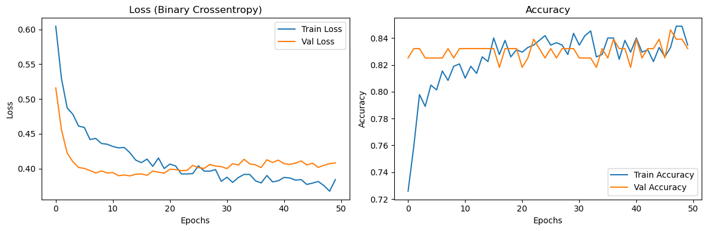
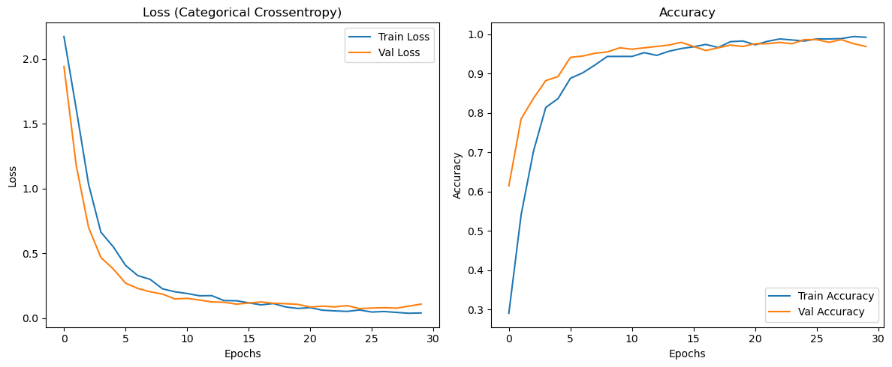

<!DOCTYPE html>


<html lang="en" data-content_root="../" >

  <head>
    <meta charset="utf-8" />
    <meta name="viewport" content="width=device-width, initial-scale=1.0" /><meta name="viewport" content="width=device-width, initial-scale=1" />

    <title>19장 딥러닝 공부하기 &#8212; 데이터 분석 이제 AI에게 맡겨라</title>
  
  
  
  <script data-cfasync="false">
    document.documentElement.dataset.mode = localStorage.getItem("mode") || "";
    document.documentElement.dataset.theme = localStorage.getItem("theme") || "";
  </script>
  
  <!-- Loaded before other Sphinx assets -->
  <link href="../_static/styles/theme.css?digest=dfe6caa3a7d634c4db9b" rel="stylesheet" />
<link href="../_static/styles/bootstrap.css?digest=dfe6caa3a7d634c4db9b" rel="stylesheet" />
<link href="../_static/styles/pydata-sphinx-theme.css?digest=dfe6caa3a7d634c4db9b" rel="stylesheet" />

  
  <link href="../_static/vendor/fontawesome/6.5.2/css/all.min.css?digest=dfe6caa3a7d634c4db9b" rel="stylesheet" />
  <link rel="preload" as="font" type="font/woff2" crossorigin href="../_static/vendor/fontawesome/6.5.2/webfonts/fa-solid-900.woff2" />
<link rel="preload" as="font" type="font/woff2" crossorigin href="../_static/vendor/fontawesome/6.5.2/webfonts/fa-brands-400.woff2" />
<link rel="preload" as="font" type="font/woff2" crossorigin href="../_static/vendor/fontawesome/6.5.2/webfonts/fa-regular-400.woff2" />

    <link rel="stylesheet" type="text/css" href="../_static/pygments.css?v=03e43079" />
    <link rel="stylesheet" type="text/css" href="../_static/styles/sphinx-book-theme.css?v=eba8b062" />
    <link rel="stylesheet" type="text/css" href="../_static/togglebutton.css?v=13237357" />
    <link rel="stylesheet" type="text/css" href="../_static/copybutton.css?v=76b2166b" />
    <link rel="stylesheet" type="text/css" href="../_static/mystnb.4510f1fc1dee50b3e5859aac5469c37c29e427902b24a333a5f9fcb2f0b3ac41.css" />
    <link rel="stylesheet" type="text/css" href="../_static/sphinx-thebe.css?v=4fa983c6" />
    <link rel="stylesheet" type="text/css" href="../_static/sphinx-design.min.css?v=95c83b7e" />
  
  <!-- Pre-loaded scripts that we'll load fully later -->
  <link rel="preload" as="script" href="../_static/scripts/bootstrap.js?digest=dfe6caa3a7d634c4db9b" />
<link rel="preload" as="script" href="../_static/scripts/pydata-sphinx-theme.js?digest=dfe6caa3a7d634c4db9b" />
  <script src="../_static/vendor/fontawesome/6.5.2/js/all.min.js?digest=dfe6caa3a7d634c4db9b"></script>

    <script src="../_static/documentation_options.js?v=9eb32ce0"></script>
    <script src="../_static/doctools.js?v=9bcbadda"></script>
    <script src="../_static/sphinx_highlight.js?v=dc90522c"></script>
    <script src="../_static/clipboard.min.js?v=a7894cd8"></script>
    <script src="../_static/copybutton.js?v=f281be69"></script>
    <script src="../_static/scripts/sphinx-book-theme.js?v=887ef09a"></script>
    <script>let toggleHintShow = 'Click to show';</script>
    <script>let toggleHintHide = 'Click to hide';</script>
    <script>let toggleOpenOnPrint = 'true';</script>
    <script src="../_static/togglebutton.js?v=4a39c7ea"></script>
    <script>var togglebuttonSelector = '.toggle, .admonition.dropdown';</script>
    <script src="../_static/design-tabs.js?v=f930bc37"></script>
    <script>const THEBE_JS_URL = "https://unpkg.com/thebe@0.8.2/lib/index.js"; const thebe_selector = ".thebe,.cell"; const thebe_selector_input = "pre"; const thebe_selector_output = ".output, .cell_output"</script>
    <script async="async" src="../_static/sphinx-thebe.js?v=c100c467"></script>
    <script>window.MathJax = {"options": {"processHtmlClass": "tex2jax_process|mathjax_process|math|output_area"}}</script>
    <script defer="defer" src="https://cdn.jsdelivr.net/npm/mathjax@3/es5/tex-mml-chtml.js"></script>
    <script>DOCUMENTATION_OPTIONS.pagename = 'notebooks/19_딥러닝_공부하기';</script>
    <link rel="index" title="Index" href="../genindex.html" />
    <link rel="search" title="Search" href="../search.html" />
    <link rel="next" title="20장 패널 데이터 분석" href="20_%ED%8C%A8%EB%84%90_%EB%8D%B0%EC%9D%B4%ED%84%B0_%EB%B6%84%EC%84%9D.html" />
    <link rel="prev" title="18장 트리 기반 모형" href="18_%ED%8A%B8%EB%A6%AC_%EA%B8%B0%EB%B0%98_%EB%AA%A8%ED%98%95.html" />
  <meta name="viewport" content="width=device-width, initial-scale=1"/>
  <meta name="docsearch:language" content="en"/>
  </head>
  
  
  <body data-bs-spy="scroll" data-bs-target=".bd-toc-nav" data-offset="180" data-bs-root-margin="0px 0px -60%" data-default-mode="">

  
  
  <div id="pst-skip-link" class="skip-link d-print-none"><a href="#main-content">Skip to main content</a></div>
  
  <div id="pst-scroll-pixel-helper"></div>
  
  <button type="button" class="btn rounded-pill" id="pst-back-to-top">
    <i class="fa-solid fa-arrow-up"></i>Back to top</button>

  
  <input type="checkbox"
          class="sidebar-toggle"
          id="pst-primary-sidebar-checkbox"/>
  <label class="overlay overlay-primary" for="pst-primary-sidebar-checkbox"></label>
  
  <input type="checkbox"
          class="sidebar-toggle"
          id="pst-secondary-sidebar-checkbox"/>
  <label class="overlay overlay-secondary" for="pst-secondary-sidebar-checkbox"></label>
  
  <div class="search-button__wrapper">
    <div class="search-button__overlay"></div>
    <div class="search-button__search-container">
<form class="bd-search d-flex align-items-center"
      action="../search.html"
      method="get">
  <i class="fa-solid fa-magnifying-glass"></i>
  <input type="search"
         class="form-control"
         name="q"
         id="search-input"
         placeholder="Search this book..."
         aria-label="Search this book..."
         autocomplete="off"
         autocorrect="off"
         autocapitalize="off"
         spellcheck="false"/>
  <span class="search-button__kbd-shortcut"><kbd class="kbd-shortcut__modifier">Ctrl</kbd>+<kbd>K</kbd></span>
</form></div>
  </div>

  <div class="pst-async-banner-revealer d-none">
  <aside id="bd-header-version-warning" class="d-none d-print-none" aria-label="Version warning"></aside>
</div>

  
    <header class="bd-header navbar navbar-expand-lg bd-navbar d-print-none">
    </header>
  

  <div class="bd-container">
    <div class="bd-container__inner bd-page-width">
      
      
      
      <div class="bd-sidebar-primary bd-sidebar">
        

  
  <div class="sidebar-header-items sidebar-primary__section">
    
    
    
    
  </div>
  
    <div class="sidebar-primary-items__start sidebar-primary__section">
        <div class="sidebar-primary-item">

  
    
  

<a class="navbar-brand logo" href="00_%EC%84%9C%EB%AC%B8.html">
  
  
  
  
  
    
    
      
    
    
    
    <script>document.write(``);</script>
  
  
</a></div>
        <div class="sidebar-primary-item">

 <script>
 document.write(`
   <button class="btn search-button-field search-button__button" title="Search" aria-label="Search" data-bs-placement="bottom" data-bs-toggle="tooltip">
    <i class="fa-solid fa-magnifying-glass"></i>
    <span class="search-button__default-text">Search</span>
    <span class="search-button__kbd-shortcut"><kbd class="kbd-shortcut__modifier">Ctrl</kbd>+<kbd class="kbd-shortcut__modifier">K</kbd></span>
   </button>
 `);
 </script></div>
        <div class="sidebar-primary-item"><nav class="bd-links bd-docs-nav" aria-label="Main">
    <div class="bd-toc-item navbar-nav active">
        
        <ul class="nav bd-sidenav bd-sidenav__home-link">
            <li class="toctree-l1">
                <a class="reference internal" href="00_%EC%84%9C%EB%AC%B8.html">
                    서문
                </a>
            </li>
        </ul>
        <ul class="current nav bd-sidenav">
<li class="toctree-l1"><a class="reference internal" href="01_%EC%8B%9C%ED%97%98%EC%84%B1%EC%A0%81_%EB%B6%84%EC%84%9D.html"><strong>1장 시험성적 분석</strong></a></li>
<li class="toctree-l1"><a class="reference internal" href="02_%EB%8C%80%ED%86%B5%EB%A0%B9_%EC%A7%80%EC%A7%80%EC%9C%A8_%EB%B3%80%ED%99%94_%EB%B6%84%EC%84%9D.html"><strong>2장 대통령 지지율 변화 분석</strong></a></li>
<li class="toctree-l1"><a class="reference internal" href="03_KBO_%EC%A0%95%EA%B7%9C%EC%8B%9C%EC%A6%8C_%ED%8C%80%EC%84%B1%EC%A0%81_%EB%B6%84%EC%84%9D.html"><strong>3장 KBO 정규시즌 팀성적 분석</strong></a></li>
<li class="toctree-l1"><a class="reference internal" href="04_PPP_%EA%B7%B8%EB%9E%98%ED%94%84_%EB%B6%84%EC%84%9D.html"><strong>4장 PPP 그래프 분석</strong></a></li>
<li class="toctree-l1"><a class="reference internal" href="05_%EC%84%B8%EA%B3%84%EC%9D%80%ED%96%89_%EB%8D%B0%EC%9D%B4%ED%84%B0_%EC%B6%94%EC%B6%9C.html"><strong>5장 세계은행 데이터 추출</strong></a></li>
<li class="toctree-l1"><a class="reference internal" href="06_%EC%A3%BC%EA%B0%80_%EC%98%88%EC%B8%A1_%EC%8B%9C%EC%8A%A4%ED%85%9C_%EA%B5%AC%EC%B6%95.html"><strong>6장 주가 예측 시스템 구축</strong></a></li>
<li class="toctree-l1"><a class="reference internal" href="07_%EB%8C%93%EA%B8%80_%ED%86%B5%EA%B3%84_%EB%B6%84%EC%84%9D.html"><strong>7장 댓글 통계 분석</strong></a></li>
<li class="toctree-l1"><a class="reference internal" href="08_%EC%84%9C%EC%9A%B8_%EC%95%84%ED%8C%8C%ED%8A%B8_%EB%A7%A4%EB%AC%BC_%EB%B3%80%ED%99%94_%EB%B6%84%EC%84%9D.html"><strong>8장 서울 아파트 매물 변화 분석</strong></a></li>
<li class="toctree-l1"><a class="reference internal" href="09_%EC%84%A4%EB%AC%B8%EC%A1%B0%EC%82%AC_%EB%B6%84%EC%84%9D.html"><strong>9장 설문조사 분석</strong></a></li>
<li class="toctree-l1"><a class="reference internal" href="10_%ED%83%90%EC%83%89%EC%A0%81_%EC%9A%94%EC%9D%B8%EB%B6%84%EC%84%9D.html"><strong>10장 탐색적 요인분석</strong></a></li>
<li class="toctree-l1"><a class="reference internal" href="11_%EB%B3%B4%EC%8A%A4%ED%84%B4_%EC%A3%BC%ED%83%9D_%EA%B0%80%EA%B2%A9_%EB%B6%84%EC%84%9D.html"><strong>11장 보스턴 주택 가격 분석</strong></a></li>
<li class="toctree-l1"><a class="reference internal" href="12_%EC%A2%85%EB%B6%80%EC%84%B8%EC%99%80_%EC%9B%94%EC%84%B8%EC%9D%98_%EA%B4%80%EA%B3%84.html"><strong>12장 종부세와 월세의 관계</strong></a></li>
<li class="toctree-l1"><a class="reference internal" href="13_%EB%8C%80%ED%98%95%EB%A7%88%ED%8A%B8_%EC%87%A0%EB%9D%BD_%EC%9B%90%EC%9D%B8_%EC%8B%A4%EC%A6%9D%EB%B6%84%EC%84%9D.html"><strong>13장 대형마트 쇠락 원인 실증분석</strong></a></li>
<li class="toctree-l1"><a class="reference internal" href="14_%EC%8B%A0%EC%83%9D%EC%95%84_%ED%8A%B9%EB%A1%80%EB%8C%80%EC%B6%9C%EA%B3%BC_%EC%B6%9C%EC%82%B0%EC%9C%A8.html"><strong>14장 신생아 특례대출과 출산율</strong></a></li>
<li class="toctree-l1"><a class="reference internal" href="15_Ridge_%EB%B0%8F_Lasso_%ED%9A%8C%EA%B7%80.html"><strong>15장 Ridge 및 Lasso 회귀</strong></a></li>
<li class="toctree-l1"><a class="reference internal" href="16_%EB%A1%9C%EC%A7%80%EC%8A%A4%ED%8B%B1_%ED%9A%8C%EA%B7%80.html"><strong>16장 로지스틱 회귀</strong></a></li>
<li class="toctree-l1"><a class="reference internal" href="17_%EC%9D%98%EC%82%AC%EA%B2%B0%EC%A0%95_%ED%8A%B8%EB%A6%AC_%EB%AA%A8%ED%98%95.html"><strong>17장 의사결정 트리 모형</strong></a></li>
<li class="toctree-l1"><a class="reference internal" href="18_%ED%8A%B8%EB%A6%AC_%EA%B8%B0%EB%B0%98_%EB%AA%A8%ED%98%95.html"><strong>18장 트리 기반 모형</strong></a></li>
<li class="toctree-l1 current active"><a class="current reference internal" href="#"><strong>19장 딥러닝 공부하기</strong></a></li>
<li class="toctree-l1"><a class="reference internal" href="20_%ED%8C%A8%EB%84%90_%EB%8D%B0%EC%9D%B4%ED%84%B0_%EB%B6%84%EC%84%9D.html"><strong>20장 패널 데이터 분석</strong></a></li>
<li class="toctree-l1"><a class="reference internal" href="21_%EA%B3%A8%EB%B0%80%EB%8F%84_%EA%B2%80%EC%82%AC_%EA%B2%B0%EA%B3%BC_%ED%95%B4%EC%84%9D.html"><strong>21장 골밀도 검사 결과 해석</strong></a></li>
<li class="toctree-l1"><a class="reference internal" href="22_%EC%9A%B4%EB%8F%99%ED%95%99_Kinematics.html"><strong>22장 운동학 (Kinematics)</strong></a></li>
<li class="toctree-l1"><a class="reference internal" href="23_%EC%B6%95%EA%B5%AC_%EA%B2%BD%EA%B8%B0_%EB%8D%B0%EC%9D%B4%ED%84%B0_%EB%B6%84%EC%84%9D.html"><strong>23장 축구 경기 데이터 분석</strong></a></li>
<li class="toctree-l1"><a class="reference internal" href="24_%ED%8F%AD%EA%B2%A9_%ED%8C%8C%EA%B4%B4%EB%A0%A5_%EB%B6%84%EC%84%9D.html"><strong>24장 폭격 파괴력 분석</strong></a></li>
<li class="toctree-l1"><a class="reference internal" href="25_%EC%84%B8%EA%B3%84_%ED%99%94%EC%9E%A5%ED%92%88_%EA%B5%90%EC%97%AD_%ED%8A%B8%EB%A0%8C%EB%93%9C.html"><strong>25장 세계 화장품 교역 트렌드</strong></a></li>
<li class="toctree-l1"><a class="reference internal" href="26_Texas_Special_Education.html"><strong>26장 텍사스주 특수교육 현황</strong></a></li>
</ul>

    </div>
</nav></div>
    </div>
  
  
  <div class="sidebar-primary-items__end sidebar-primary__section">
  </div>
  
  <div id="rtd-footer-container"></div>


      </div>
      
      <main id="main-content" class="bd-main" role="main">
        
        

<div class="sbt-scroll-pixel-helper"></div>

          <div class="bd-content">
            <div class="bd-article-container">
              
              <div class="bd-header-article d-print-none">
<div class="header-article-items header-article__inner">
  
    <div class="header-article-items__start">
      
        <div class="header-article-item"><button class="sidebar-toggle primary-toggle btn btn-sm" title="Toggle primary sidebar" data-bs-placement="bottom" data-bs-toggle="tooltip">
  <span class="fa-solid fa-bars"></span>
</button></div>
      
    </div>
  
  
    <div class="header-article-items__end">
      
        <div class="header-article-item">

<div class="article-header-buttons">


<div class="dropdown dropdown-source-buttons">
  <button class="btn dropdown-toggle" type="button" data-bs-toggle="dropdown" aria-expanded="false" aria-label="Source repositories">
    <i class="fab fa-github"></i>
  </button>
  <ul class="dropdown-menu">
      
      
      
      <li><a href="https://github.com/pilsunchoi/book4" target="_blank"
   class="btn btn-sm btn-source-repository-button dropdown-item"
   title="Source repository"
   data-bs-placement="left" data-bs-toggle="tooltip"
>
  

<span class="btn__icon-container">
  <i class="fab fa-github"></i>
  </span>
<span class="btn__text-container">Repository</span>
</a>
</li>
      
      
      
      
      <li><a href="https://github.com/pilsunchoi/book4/issues/new?title=Issue%20on%20page%20%2Fnotebooks/19_딥러닝_공부하기.html&body=Your%20issue%20content%20here." target="_blank"
   class="btn btn-sm btn-source-issues-button dropdown-item"
   title="Open an issue"
   data-bs-placement="left" data-bs-toggle="tooltip"
>
  

<span class="btn__icon-container">
  <i class="fas fa-lightbulb"></i>
  </span>
<span class="btn__text-container">Open issue</span>
</a>
</li>
      
  </ul>
</div>


<div class="dropdown dropdown-download-buttons">
  <button class="btn dropdown-toggle" type="button" data-bs-toggle="dropdown" aria-expanded="false" aria-label="Download this page">
    <i class="fas fa-download"></i>
  </button>
  <ul class="dropdown-menu">
      
      
      
      <li><a href="../_sources/notebooks/19_딥러닝_공부하기.ipynb" target="_blank"
   class="btn btn-sm btn-download-source-button dropdown-item"
   title="Download source file"
   data-bs-placement="left" data-bs-toggle="tooltip"
>
  

<span class="btn__icon-container">
  <i class="fas fa-file"></i>
  </span>
<span class="btn__text-container">.ipynb</span>
</a>
</li>
      
      
      
      
      <li>
<button onclick="window.print()"
  class="btn btn-sm btn-download-pdf-button dropdown-item"
  title="Print to PDF"
  data-bs-placement="left" data-bs-toggle="tooltip"
>
  

<span class="btn__icon-container">
  <i class="fas fa-file-pdf"></i>
  </span>
<span class="btn__text-container">.pdf</span>
</button>
</li>
      
  </ul>
</div>


<button onclick="toggleFullScreen()"
  class="btn btn-sm btn-fullscreen-button"
  title="Fullscreen mode"
  data-bs-placement="bottom" data-bs-toggle="tooltip"
>
  

<span class="btn__icon-container">
  <i class="fas fa-expand"></i>
  </span>

</button>


<script>
document.write(`
  <button class="btn btn-sm nav-link pst-navbar-icon theme-switch-button" title="light/dark" aria-label="light/dark" data-bs-placement="bottom" data-bs-toggle="tooltip">
    <i class="theme-switch fa-solid fa-sun fa-lg" data-mode="light"></i>
    <i class="theme-switch fa-solid fa-moon fa-lg" data-mode="dark"></i>
    <i class="theme-switch fa-solid fa-circle-half-stroke fa-lg" data-mode="auto"></i>
  </button>
`);
</script>


<script>
document.write(`
  <button class="btn btn-sm pst-navbar-icon search-button search-button__button" title="Search" aria-label="Search" data-bs-placement="bottom" data-bs-toggle="tooltip">
    <i class="fa-solid fa-magnifying-glass fa-lg"></i>
  </button>
`);
</script>
<button class="sidebar-toggle secondary-toggle btn btn-sm" title="Toggle secondary sidebar" data-bs-placement="bottom" data-bs-toggle="tooltip">
    <span class="fa-solid fa-list"></span>
</button>
</div></div>
      
    </div>
  
</div>
</div>
              
              

<div id="jb-print-docs-body" class="onlyprint">
    <h1>19장 딥러닝 공부하기</h1>
    <!-- Table of contents -->
    <div id="print-main-content">
        <div id="jb-print-toc">
            
            <div>
                <h2> Contents </h2>
            </div>
            <nav aria-label="Page">
                <ul class="visible nav section-nav flex-column">
<li class="toc-h2 nav-item toc-entry"><a class="reference internal nav-link" href="#id2"><span style="color: blue;"><strong>1. 딥러닝 개념, 역사, 종류</strong></span></a></li>
<li class="toc-h2 nav-item toc-entry"><a class="reference internal nav-link" href="#gemini"><strong>Gemini 설명</strong></a><ul class="nav section-nav flex-column">
<li class="toc-h3 nav-item toc-entry"><a class="reference internal nav-link" href="#concept">1. 딥러닝의 개념 (Concept)</a><ul class="nav section-nav flex-column">
<li class="toc-h4 nav-item toc-entry"><a class="reference internal nav-link" href="#representation-learning">정의: 표현 학습 (Representation Learning)</a></li>
<li class="toc-h4 nav-item toc-entry"><a class="reference internal nav-link" href="#id3">핵심 원리: 뇌의 모방</a></li>
<li class="toc-h4 nav-item toc-entry"><a class="reference internal nav-link" href="#vs">기존 머신러닝 vs. 딥러닝</a></li>
</ul>
</li>
<li class="toc-h3 nav-item toc-entry"><a class="reference internal nav-link" href="#history">2. 딥러닝의 역사 (History)</a><ul class="nav section-nav flex-column">
<li class="toc-h4 nav-item toc-entry"><a class="reference internal nav-link" href="#perceptron">1세대: 태동기 (1940~1960년대) - 퍼셉트론(Perceptron)</a></li>
<li class="toc-h4 nav-item toc-entry"><a class="reference internal nav-link" href="#ai-1969-xor">1차 AI 겨울 (1969년) - XOR 문제</a></li>
</ul>
</li>
<li class="toc-h3 nav-item toc-entry"><a class="reference internal nav-link" href="#id4">2세대: 부흥기 (1980년대) - 다층 퍼셉트론과 역전파</a><ul class="nav section-nav flex-column">
<li class="toc-h4 nav-item toc-entry"><a class="reference internal nav-link" href="#ai-1990-svm">2차 AI 겨울 (1990년대) - 기울기 소실과 SVM의 등극</a></li>
</ul>
</li>
<li class="toc-h3 nav-item toc-entry"><a class="reference internal nav-link" href="#id5">3세대: 딥러닝의 시대 (2006년 ~ 현재)</a></li>
<li class="toc-h3 nav-item toc-entry"><a class="reference internal nav-link" href="#types">3. 딥러닝의 주요 종류 (Types)</a><ul class="nav section-nav flex-column">
<li class="toc-h4 nav-item toc-entry"><a class="reference internal nav-link" href="#dnn-deep-neural-network">1. 심층 신경망 (DNN: Deep Neural Network)</a></li>
<li class="toc-h4 nav-item toc-entry"><a class="reference internal nav-link" href="#cnn-convolutional-neural-network">2. 합성곱 신경망 (CNN: Convolutional Neural Network)</a></li>
<li class="toc-h4 nav-item toc-entry"><a class="reference internal nav-link" href="#rnn-recurrent-neural-network">3. 순환 신경망 (RNN: Recurrent Neural Network)</a></li>
<li class="toc-h4 nav-item toc-entry"><a class="reference internal nav-link" href="#transformer-attention">4. 트랜스포머 (Transformer) &amp; 어텐션 (Attention)</a></li>
<li class="toc-h4 nav-item toc-entry"><a class="reference internal nav-link" href="#gan-generative-adversarial-network">5. 생성적 적대 신경망 (GAN: Generative Adversarial Network)</a></li>
<li class="toc-h4 nav-item toc-entry"><a class="reference internal nav-link" href="#autoencoder">6. 오토인코더 (Autoencoder)</a></li>
<li class="toc-h4 nav-item toc-entry"><a class="reference internal nav-link" href="#reinforcement-learning-deep-rl">7. 강화학습 (Reinforcement Learning)과 딥러닝의 결합 (Deep RL)</a></li>
</ul>
</li>
<li class="toc-h3 nav-item toc-entry"><a class="reference internal nav-link" href="#id6">요약</a></li>
</ul>
</li>
<li class="toc-h2 nav-item toc-entry"><a class="reference internal nav-link" href="#dnn"><span style="color: blue;"><strong>2. DNN 모형 예제</strong></span></a></li>
<li class="toc-h2 nav-item toc-entry"><a class="reference internal nav-link" href="#id7"><strong>Gemini 분석</strong></a><ul class="nav section-nav flex-column">
<li class="toc-h3 nav-item toc-entry"><a class="reference internal nav-link" href="#data-preprocessing">1단계: 데이터 전처리 (Data Preprocessing)</a></li>
<li class="toc-h3 nav-item toc-entry"><a class="reference internal nav-link" href="#model-architecture">2단계: 모델 아키텍처 (Model Architecture)</a></li>
<li class="toc-h3 nav-item toc-entry"><a class="reference internal nav-link" href="#compile">3단계: 컴파일 (Compile)</a></li>
<li class="toc-h3 nav-item toc-entry"><a class="reference internal nav-link" href="#train">4단계: 학습 (Train)</a></li>
<li class="toc-h3 nav-item toc-entry"><a class="reference internal nav-link" href="#evaluate">5단계: 결과 해석 (Evaluate)</a><ul class="nav section-nav flex-column">
<li class="toc-h4 nav-item toc-entry"><a class="reference internal nav-link" href="#loss">1. 왼쪽 그래프: 손실 (Loss)</a></li>
<li class="toc-h4 nav-item toc-entry"><a class="reference internal nav-link" href="#accuracy">2. 오른쪽 그래프: 정확도 (Accuracy)</a></li>
<li class="toc-h4 nav-item toc-entry"><a class="reference internal nav-link" href="#id8">요약</a></li>
</ul>
</li>
</ul>
</li>
<li class="toc-h2 nav-item toc-entry"><a class="reference internal nav-link" href="#cnn"><span style="color: blue;"><strong>3. CNN 모형 예제</strong></span></a></li>
<li class="toc-h2 nav-item toc-entry"><a class="reference internal nav-link" href="#id9"><strong>Gemini 분석</strong></a><ul class="nav section-nav flex-column">
<li class="toc-h3 nav-item toc-entry"><a class="reference internal nav-link" href="#id10">1단계: 데이터 전처리 (Data Preprocessing)</a></li>
<li class="toc-h3 nav-item toc-entry"><a class="reference internal nav-link" href="#id11">2단계: 모델 아키텍처 (Model Architecture)</a></li>
<li class="toc-h3 nav-item toc-entry"><a class="reference internal nav-link" href="#train-result">3단계: 학습 및 결과 (Train &amp; Result)</a></li>
</ul>
</li>
<li class="toc-h2 nav-item toc-entry"><a class="reference internal nav-link" href="#id12"><strong>참고: 파이썬 코드</strong></a></li>
</ul>
            </nav>
        </div>
    </div>
</div>

              
                
<div id="searchbox"></div>
                <article class="bd-article">
                  
  <section class="tex2jax_ignore mathjax_ignore" id="id1">
<h1><strong>19장 딥러닝 공부하기</strong><a class="headerlink" href="#id1" title="Link to this heading">#</a></h1>
<section id="id2">
<h2><span style="color: blue;"><strong>1. 딥러닝 개념, 역사, 종류</strong></span><a class="headerlink" href="#id2" title="Link to this heading">#</a></h2>
</section>
<section id="gemini">
<h2><strong>Gemini 설명</strong><a class="headerlink" href="#gemini" title="Link to this heading">#</a></h2>
<section id="concept">
<h3>1. 딥러닝의 개념 (Concept)<a class="headerlink" href="#concept" title="Link to this heading">#</a></h3>
<section id="representation-learning">
<h4>정의: 표현 학습 (Representation Learning)<a class="headerlink" href="#representation-learning" title="Link to this heading">#</a></h4>
<p>딥러닝(Deep Learning)은 머신러닝(Machine Learning)의 하위 분야로, <strong>“인공 신경망(Artificial Neural Network)을 통해 데이터의 잠재적인 표현(Representation)을 기계가 스스로 학습하는 기술”</strong> 이다.</p>
</section>
<section id="id3">
<h4>핵심 원리: 뇌의 모방<a class="headerlink" href="#id3" title="Link to this heading">#</a></h4>
<p>인간의 뇌는 약 1,000억 개의 뉴런(Neuron)과 그들을 연결하는 시냅스(Synapse)로 구성된다. 딥러닝은 이를 수학적으로 모델링한다.</p>
<ul class="simple">
<li><p><strong>뉴런(Neuron) <span class="math notranslate nohighlight">\(\approx\)</span> 노드(Node):</strong> 정보를 받아들이고 처리하는 단위.</p></li>
<li><p><strong>시냅스(Synapse) <span class="math notranslate nohighlight">\(\approx\)</span> 가중치(Weight):</strong> 정보의 중요도를 조절하는 연결 강도. <span class="math notranslate nohighlight">\(y = wx + b\)</span>의 <span class="math notranslate nohighlight">\(w\)</span>에 해당한다.</p></li>
<li><p><strong>활성화(Activation):</strong> 특정 임계값을 넘으면 신호를 전달하는 과정(활성화 함수).</p></li>
</ul>
</section>
<section id="vs">
<h4>기존 머신러닝 vs. 딥러닝<a class="headerlink" href="#vs" title="Link to this heading">#</a></h4>
<p>가장 중요한 차이는 <strong>‘특성 추출(Feature Extraction)’을 누가 하느냐</strong>이다.</p>
<ul class="simple">
<li><p><strong>머신러닝 (Classic ML):</strong> 사람이 직접 특성을 정의해 줘야 한다. (예: “고양이는 귀가 뾰족하다”라는 특성을 코드로 짜서 넣어줌)</p></li>
<li><p><strong>딥러닝 (Deep Learning):</strong> 데이터만 던져주면 기계가 스스로 특성을 찾아낸다. (예: 사진 수만 장을 보더니 “이런 패턴이 귀라는 것이군” 하고 스스로 학습함) 이를 <strong>표현 학습(Representation Learning)</strong> 이라 한다.</p></li>
</ul>
</section>
</section>
<hr class="docutils" />
<section id="history">
<h3>2. 딥러닝의 역사 (History)<a class="headerlink" href="#history" title="Link to this heading">#</a></h3>
<p>딥러닝의 역사는 ‘기대’와 ‘실망(AI 겨울)’의 반복이었다. 이 흐름을 이해하는 것은 딥러닝의 한계와 발전 방향을 이해하는 데 중요하다.</p>
<section id="perceptron">
<h4>1세대: 태동기 (1940~1960년대) - 퍼셉트론(Perceptron)<a class="headerlink" href="#perceptron" title="Link to this heading">#</a></h4>
<ul class="simple">
<li><p><strong>1943년:</strong> 워렌 맥컬록과 월터 피츠가 최초의 인공 뉴런 모델을 제안했다.</p></li>
<li><p><strong>1958년:</strong> 프랭크 로젠블라트가 <strong>‘퍼셉트론(Perceptron)’</strong> 알고리즘을 발표했다. 입력값에 가중치를 곱해 합산한 뒤, 0 또는 1을 출력하는 선형 분류기였다. 당시에는 “생각하는 기계”라며 엄청난 주목을 받았다.</p></li>
</ul>
</section>
<section id="ai-1969-xor">
<h4>1차 AI 겨울 (1969년) - XOR 문제<a class="headerlink" href="#ai-1969-xor" title="Link to this heading">#</a></h4>
<ul class="simple">
<li><p><strong>1969년:</strong> 마빈 민스키와 시모어 페퍼트가 저서 &lt;퍼셉트론&gt;에서 <strong>“단층 퍼셉트론은 단순한 선형 문제만 풀 수 있으며, XOR(배타적 논리합) 같은 비선형 문제는 절대 풀 수 없다”</strong> 고 수학적으로 증명했다.</p></li>
<li><p>이로 인해 신경망 연구에 대한 지원이 끊기며 첫 번째 암흑기가 도래했다.</p></li>
</ul>
</section>
</section>
<section id="id4">
<h3>2세대: 부흥기 (1980년대) - 다층 퍼셉트론과 역전파<a class="headerlink" href="#id4" title="Link to this heading">#</a></h3>
<ul class="simple">
<li><p><strong>1986년:</strong> 제프리 힌튼(Geoffrey Hinton) 등이 <strong>‘오차 역전파(Backpropagation)’</strong> 알고리즘을 재발견하여 대중화시켰다.</p></li>
<li><p>이를 통해 은닉층(Hidden Layer)을 가진 <strong>다층 퍼셉트론(MLP)</strong> 의 학습이 가능해졌다. 비로소 XOR 문제를 포함한 비선형 문제를 해결할 수 있게 되었다.</p></li>
</ul>
<section id="ai-1990-svm">
<h4>2차 AI 겨울 (1990년대) - 기울기 소실과 SVM의 등극<a class="headerlink" href="#ai-1990-svm" title="Link to this heading">#</a></h4>
<ul class="simple">
<li><p>신경망을 깊게 쌓을수록 학습이 안 되는 문제에 봉착했다.</p>
<ol class="arabic simple">
<li><p><strong>기울기 소실(Vanishing Gradient):</strong> 역전파 과정에서 뒤쪽의 오차가 앞쪽 층으로 전달되면서 점점 0에 가까워져 학습이 멈추는 현상.</p></li>
<li><p><strong>데이터 및 컴퓨팅 파워 부족:</strong> 당시 컴퓨터로는 복잡한 연산을 감당할 수 없었다.</p></li>
</ol>
</li>
<li><p>이 시기에는 수학적으로 깔끔하고 성능이 보장된 <strong>SVM(서포트 벡터 머신)</strong> 이나 <strong>Random Forest</strong> 같은 머신러닝 알고리즘이 주류를 이루었다.</p></li>
</ul>
</section>
</section>
<section id="id5">
<h3>3세대: 딥러닝의 시대 (2006년 ~ 현재)<a class="headerlink" href="#id5" title="Link to this heading">#</a></h3>
<ul class="simple">
<li><p><strong>2006년:</strong> 제프리 힌튼 교수가 심층 신뢰 신경망(DBN)을 통해 깊은 신경망도 학습 가능하다는 가능성을 보이며 ‘Deep Learning’이라는 용어를 사용하기 시작했다.</p></li>
<li><p><strong>2012년 (빅뱅):</strong> 이미지 인식 대회인 ‘ImageNet’에서 힌튼 교수팀의 <strong>AlexNet</strong>이 압도적인 차이로 우승했다.</p>
<ul>
<li><p><strong>성공 요인:</strong> GPU를 연산에 활용, ReLU 활성화 함수 사용(기울기 소실 해결), Dropout(과적합 방지) 도입.</p></li>
</ul>
</li>
<li><p>이후 구글, 페이스북 등이 막대한 투자를 시작하며 알파고(2016), GPT(2018~) 등으로 이어지는 현재의 AI 붐이 시작되었다.</p></li>
</ul>
</section>
<hr class="docutils" />
<section id="types">
<h3>3. 딥러닝의 주요 종류 (Types)<a class="headerlink" href="#types" title="Link to this heading">#</a></h3>
<p>데이터의 형태(이미지, 텍스트, 정형 데이터)와 목적에 따라 모델 구조가 나뉜다.</p>
<section id="dnn-deep-neural-network">
<h4>1. 심층 신경망 (DNN: Deep Neural Network)<a class="headerlink" href="#dnn-deep-neural-network" title="Link to this heading">#</a></h4>
<ul class="simple">
<li><p><strong>구조:</strong> 입력층, 은닉층, 출력층이 모두 서로 연결된(Fully Connected) 가장 기본적인 형태.</p></li>
<li><p><strong>특성:</strong> 정형 데이터(엑셀 데이터 등) 처리에 강하다.</p></li>
<li><p><strong>한계:</strong> 이미지나 텍스트처럼 위치 정보나 순서가 중요한 데이터에는 효율이 떨어진다(파라미터가 너무 많아짐).</p></li>
</ul>
</section>
<section id="cnn-convolutional-neural-network">
<h4>2. 합성곱 신경망 (CNN: Convolutional Neural Network)<a class="headerlink" href="#cnn-convolutional-neural-network" title="Link to this heading">#</a></h4>
<ul class="simple">
<li><p><strong>핵심:</strong> 인간의 시각 처리 방식을 모방했다.</p></li>
<li><p><strong>동작:</strong> ‘필터(Filter)’가 이미지를 스캔하며 특성(가로선, 세로선 -&gt; 눈, 코 -&gt; 얼굴)을 추출한다.</p></li>
<li><p><strong>주요 개념:</strong></p>
<ul>
<li><p><strong>Convolution(합성곱):</strong> 특성 추출.</p></li>
<li><p><strong>Pooling(풀링):</strong> 이미지 크기를 줄여 핵심 정보만 압축(불변성 확보).</p></li>
</ul>
</li>
<li><p><strong>활용:</strong> 이미지 분류, 객체 탐지(자율주행), 의료 영상 분석.</p></li>
</ul>
</section>
<section id="rnn-recurrent-neural-network">
<h4>3. 순환 신경망 (RNN: Recurrent Neural Network)<a class="headerlink" href="#rnn-recurrent-neural-network" title="Link to this heading">#</a></h4>
<ul class="simple">
<li><p><strong>핵심:</strong> 순서가 있는 시퀀스(Sequence) 데이터를 처리한다.</p></li>
<li><p><strong>동작:</strong> 은닉층의 결과가 다시 다음 시점의 입력으로 들어가는 순환 구조를 가진다. 즉, ‘이전의 정보’를 기억한다.</p></li>
<li><p><strong>한계:</strong> 문장이 길어지면 앞의 내용을 까먹는 ‘장기 의존성 문제’가 발생한다. 이를 해결하기 위해 <strong>LSTM(Long Short-Term Memory)</strong> 과 <strong>GRU</strong>가 개발되었다.</p></li>
<li><p><strong>활용:</strong> 시계열 예측(주식), 자연어 처리(번역, 챗봇), 음성 인식.</p></li>
</ul>
</section>
<section id="transformer-attention">
<h4>4. 트랜스포머 (Transformer) &amp; 어텐션 (Attention)<a class="headerlink" href="#transformer-attention" title="Link to this heading">#</a></h4>
<ul class="simple">
<li><p><strong>혁명:</strong> 2017년 구글이 발표(논문: “Attention is All You Need”). RNN의 순차적 처리 방식을 버리고, 문장 전체를 한 번에 보며 단어 간의 관계(<strong>Attention</strong>)를 계산한다.</p></li>
<li><p><strong>특성:</strong> 병렬 처리가 가능해 학습 속도가 비약적으로 빠르고, 긴 문맥도 완벽하게 이해한다.</p></li>
<li><p><strong>활용:</strong> 현재 모든 거대 언어 모델(LLM) - BERT, GPT, Gemini 등의 기반 기술이다. NLP를 넘어 이미지(ViT) 분야로도 확장 중이다.</p></li>
</ul>
</section>
<section id="gan-generative-adversarial-network">
<h4>5. 생성적 적대 신경망 (GAN: Generative Adversarial Network)<a class="headerlink" href="#gan-generative-adversarial-network" title="Link to this heading">#</a></h4>
<ul class="simple">
<li><p><strong>개념:</strong> “만드는 놈(Generator)과 구분하는 놈(Discriminator)의 싸움”.</p></li>
<li><p><strong>동작:</strong> 위조지폐범(생성자)은 경찰을 속이려 하고, 경찰(판별자)은 가짜를 찾아내려 노력한다. 이 경쟁 끝에 생성자는 진짜 같은 가짜를 만들게 된다.</p></li>
<li><p><strong>활용:</strong> 딥페이크, 이미지 생성, 스타일 변환. (최근에는 <strong>Diffusion Model</strong>이 생성 분야를 주도하고 있다.)</p></li>
</ul>
</section>
<section id="autoencoder">
<h4>6. 오토인코더 (Autoencoder)<a class="headerlink" href="#autoencoder" title="Link to this heading">#</a></h4>
<ul class="simple">
<li><p><strong>개념:</strong> 입력을 압축(Encoding)했다가 다시 복원(Decoding)하는 구조.</p></li>
<li><p><strong>목적:</strong> 데이터의 차원을 축소하거나, 노이즈를 제거(Denoising)하거나, 이상치(Anomaly)를 탐지하는 비지도 학습에 주로 쓰인다.</p></li>
</ul>
</section>
<section id="reinforcement-learning-deep-rl">
<h4>7. 강화학습 (Reinforcement Learning)과 딥러닝의 결합 (Deep RL)<a class="headerlink" href="#reinforcement-learning-deep-rl" title="Link to this heading">#</a></h4>
<ul class="simple">
<li><p><strong>개념:</strong> 에이전트가 환경과 상호작용하며 보상을 최대화하도록 학습한다. 딥러닝은 여기서 복잡한 상태(화면 등)를 인식하는 역할을 한다.</p></li>
<li><p><strong>활용:</strong> 알파고(바둑), 게임 AI, 로봇 제어.</p></li>
</ul>
</section>
</section>
<hr class="docutils" />
<section id="id6">
<h3>요약<a class="headerlink" href="#id6" title="Link to this heading">#</a></h3>
<p>학부생으로서 딥러닝을 공부할 때 가장 먼저 <strong>DNN(기초) -&gt; CNN(이미지) -&gt; RNN/Transformer(텍스트/시계열)</strong> 순서로 개념을 잡는 것이 좋다. 특히 현대 딥러닝은 트랜스포머 아키텍처가 지배하고 있으므로, 기초를 다진 후에는 이에 대한 이해가 필수적이다.</p>
</section>
</section>
<section id="dnn">
<h2><span style="color: blue;"><strong>2. DNN 모형 예제</strong></span><a class="headerlink" href="#dnn" title="Link to this heading">#</a></h2>
</section>
<section id="id7">
<h2><strong>Gemini 분석</strong><a class="headerlink" href="#id7" title="Link to this heading">#</a></h2>
<p><strong>‘타이타닉호 탑승객의 생존 여부(사망/생존)’</strong> 를 맞추는 <strong>이진 분류(Binary Classification)</strong> 문제를 딥러닝(DNN)으로 해결하는 표준적인 예제이다.</p>
<hr class="docutils" />
<section id="data-preprocessing">
<h3>1단계: 데이터 전처리 (Data Preprocessing)<a class="headerlink" href="#data-preprocessing" title="Link to this heading">#</a></h3>
<p>딥러닝 모델은 수학적인 연산 덩어리이기 때문에, <strong>숫자가 아닌 것(문자)</strong> 이나 <strong>비어있는 것(결측치)</strong> 을 처리하지 못하며, <strong>숫자의 크기(Scale)</strong> 에 매우 민감하다. 그래서 전처리가 가장 중요하다.</p>
<ol class="arabic simple">
<li><p><strong>결측치(NaN) 채우기:</strong></p>
<ul class="simple">
<li><p>데이터에 구멍이 있으면 에러가 난다.</p></li>
<li><p><code class="docutils literal notranslate"><span class="pre">Age</span></code>와 <code class="docutils literal notranslate"><span class="pre">Fare</span></code>: 평균값은 이상치(너무 큰 값)에 영향을 받기 쉬우므로 <strong>중앙값(Median)</strong> 으로 채웠다.</p></li>
<li><p><code class="docutils literal notranslate"><span class="pre">Embarked</span></code>: 가장 많이 등장하는 <strong>최빈값(Mode)</strong> 으로 채웠다.</p></li>
</ul>
</li>
<li><p><strong>불필요한 열 제거:</strong></p>
<ul class="simple">
<li><p><code class="docutils literal notranslate"><span class="pre">Name</span></code>, <code class="docutils literal notranslate"><span class="pre">Ticket</span></code>, <code class="docutils literal notranslate"><span class="pre">PassengerId</span></code>: 생존 여부와 직접적인 수학적 연관성을 찾기 어렵거나(이름), 너무 종류가 많아(티켓번호) 단순 DNN으로는 학습이 어려워 제거했다.</p></li>
</ul>
</li>
<li><p><strong>인코딩 (Encoding):</strong></p>
<ul class="simple">
<li><p>컴퓨터는 ‘male’, ‘female’을 모른다. <code class="docutils literal notranslate"><span class="pre">LabelEncoder</span></code>를 사용해 <code class="docutils literal notranslate"><span class="pre">Sex</span></code>를 0과 1로, <code class="docutils literal notranslate"><span class="pre">Embarked</span></code>를 0, 1, 2로 변환했다.</p></li>
</ul>
</li>
<li><p><strong>스케일링 (Scaling) - 중요!</strong></p>
<ul class="simple">
<li><p><code class="docutils literal notranslate"><span class="pre">StandardScaler</span></code>를 사용했다.</p></li>
<li><p><strong>이유:</strong> <code class="docutils literal notranslate"><span class="pre">Age</span></code>는 0~80, <code class="docutils literal notranslate"><span class="pre">Fare</span></code>는 0~500인 반면, <code class="docutils literal notranslate"><span class="pre">Sex</span></code>는 0~1이다. 스케일링을 안 하면 모델은 숫자가 큰 <code class="docutils literal notranslate"><span class="pre">Fare</span></code>가 가장 중요한 변수라고 착각하게 된다. 모든 변수를 평균 0, 분산 1인 형태로 압축하여 공평하게 대우해 준다.</p></li>
</ul>
</li>
</ol>
</section>
<hr class="docutils" />
<section id="model-architecture">
<h3>2단계: 모델 아키텍처 (Model Architecture)<a class="headerlink" href="#model-architecture" title="Link to this heading">#</a></h3>
<p>건물을 짓기 위해 설계도를 그리는 단계이다.</p>
<div class="highlight-python notranslate"><div class="highlight"><pre><span></span><span class="n">model</span> <span class="o">=</span> <span class="n">Sequential</span><span class="p">([</span>
    <span class="n">Input</span><span class="p">(</span><span class="n">shape</span><span class="o">=</span><span class="p">(</span><span class="n">X_train</span><span class="o">.</span><span class="n">shape</span><span class="p">[</span><span class="mi">1</span><span class="p">],)),</span>  <span class="c1"># 입력층</span>
    <span class="n">Dense</span><span class="p">(</span><span class="mi">64</span><span class="p">,</span> <span class="n">activation</span><span class="o">=</span><span class="s1">&#39;relu&#39;</span><span class="p">),</span>      <span class="c1"># 은닉층 1</span>
    <span class="n">Dropout</span><span class="p">(</span><span class="mf">0.2</span><span class="p">),</span>                      <span class="c1"># 드롭아웃</span>
    <span class="n">Dense</span><span class="p">(</span><span class="mi">32</span><span class="p">,</span> <span class="n">activation</span><span class="o">=</span><span class="s1">&#39;relu&#39;</span><span class="p">),</span>      <span class="c1"># 은닉층 2</span>
    <span class="n">Dense</span><span class="p">(</span><span class="mi">1</span><span class="p">,</span> <span class="n">activation</span><span class="o">=</span><span class="s1">&#39;sigmoid&#39;</span><span class="p">)</span>     <span class="c1"># 출력층</span>
<span class="p">])</span>

</pre></div>
</div>
<ul class="simple">
<li><p><strong><code class="docutils literal notranslate"><span class="pre">Input(shape=...)</span></code>:</strong> 모델에게 “데이터가 7개(특성 개수) 들어올 거야”라고 알려주는 입구이다. (최신 케라스 버전에 맞춰 <code class="docutils literal notranslate"><span class="pre">Dense</span></code> 내부 인자 대신 별도 층으로 분리했다.)</p></li>
<li><p><strong><code class="docutils literal notranslate"><span class="pre">Dense</span></code> (밀집층):</strong> 뉴런들이 빽빽하게 연결된 층이다.</p>
<ul>
<li><p><strong>ReLU:</strong> 활성화 함수이다. 입력값이 0보다 작으면 0으로, 크면 그대로 내보낸다. 딥러닝에서 ‘비선형성’을 확보하여 복잡한 패턴을 익히는 데 필수적이다.</p></li>
</ul>
</li>
<li><p><strong><code class="docutils literal notranslate"><span class="pre">Dropout(0.2)</span></code>:</strong> <strong>과적합(Overfitting) 방지 장치</strong>이다.</p>
<ul>
<li><p>학습할 때 뉴런의 20%를 무작위로 꺼버린다(0으로 만듦).</p></li>
<li><p><strong>비유:</strong> 시험 공부를 할 때 특정 참고서만 달달 외우지 못하게, 페이지를 찢어가며 공부시켜서 <strong>응용력</strong>을 키우는 방식이다.</p></li>
</ul>
</li>
<li><p><strong><code class="docutils literal notranslate"><span class="pre">Dense(1,</span> <span class="pre">activation='sigmoid')</span></code>:</strong></p>
<ul>
<li><p><strong>왜 1개인가?</strong> 생존(1)인지 사망(0)인지 하나의 확률값만 필요하기 때문이다.</p></li>
<li><p><strong>왜 Sigmoid인가?</strong> 결과값을 무조건 0과 1 사이의 확률(예: 0.75 = 생존확률 75%)로 압축해 주기 때문이다.</p></li>
</ul>
</li>
</ul>
</section>
<hr class="docutils" />
<section id="compile">
<h3>3단계: 컴파일 (Compile)<a class="headerlink" href="#compile" title="Link to this heading">#</a></h3>
<p>모델을 어떻게 학습시킬지 규칙을 정한다.</p>
<div class="highlight-python notranslate"><div class="highlight"><pre><span></span><span class="n">model</span><span class="o">.</span><span class="n">compile</span><span class="p">(</span><span class="n">optimizer</span><span class="o">=</span><span class="n">Adam</span><span class="p">(</span><span class="n">learning_rate</span><span class="o">=</span><span class="mf">0.001</span><span class="p">),</span>
              <span class="n">loss</span><span class="o">=</span><span class="s1">&#39;binary_crossentropy&#39;</span><span class="p">,</span>
              <span class="n">metrics</span><span class="o">=</span><span class="p">[</span><span class="s1">&#39;accuracy&#39;</span><span class="p">])</span>

</pre></div>
</div>
<ul class="simple">
<li><p><strong><code class="docutils literal notranslate"><span class="pre">loss='binary_crossentropy'</span></code>:</strong></p>
<ul>
<li><p>이진 분류(Yes/No) 문제의 채점 기준이다. 정답과 예측 확률의 차이(엔트로피)를 계산한다. 예측이 틀릴수록 벌점(Loss)을 크게 준다.</p></li>
</ul>
</li>
<li><p><strong><code class="docutils literal notranslate"><span class="pre">optimizer=Adam</span></code>:</strong></p>
<ul>
<li><p>벌점(Loss)을 줄이는 방향으로 파라미터(가중치)를 수정하는 ‘최적화 도구’이다. Adam은 방향과 보폭을 자동으로 조절하는 가장 똑똑하고 무난한 알고리즘이다.</p></li>
</ul>
</li>
</ul>
</section>
<hr class="docutils" />
<section id="train">
<h3>4단계: 학습 (Train)<a class="headerlink" href="#train" title="Link to this heading">#</a></h3>
<div class="highlight-python notranslate"><div class="highlight"><pre><span></span><span class="n">model</span><span class="o">.</span><span class="n">fit</span><span class="p">(</span><span class="n">X_train_scaled</span><span class="p">,</span> <span class="n">y_train</span><span class="p">,</span>
          <span class="n">epochs</span><span class="o">=</span><span class="mi">50</span><span class="p">,</span>            <span class="c1"># 전체 데이터 반복 횟수</span>
          <span class="n">batch_size</span><span class="o">=</span><span class="mi">32</span><span class="p">,</span>        <span class="c1"># 한 번에 학습할 데이터 양</span>
          <span class="n">validation_split</span><span class="o">=</span><span class="mf">0.2</span><span class="p">,</span> <span class="c1"># 훈련 데이터의 20%를 검증용으로 사용</span>
          <span class="n">verbose</span><span class="o">=</span><span class="mi">0</span><span class="p">)</span>            <span class="c1"># 로그 출력 줄이기 (0: 출력 없음)</span>

</pre></div>
</div>
<ul class="simple">
<li><p><strong><code class="docutils literal notranslate"><span class="pre">fit()</span></code>:</strong> 실제로 데이터를 넣어 학습시킨다.</p>
<ul>
<li><p><code class="docutils literal notranslate"><span class="pre">epochs=50</span></code>: 문제집을 50번 반복해서 푼다.</p></li>
<li><p><code class="docutils literal notranslate"><span class="pre">batch_size=32</span></code>: 32문제씩 풀고 채점한다.</p></li>
</ul>
</li>
</ul>
</section>
<hr class="docutils" />
<section id="evaluate">
<h3>5단계: 결과 해석 (Evaluate)<a class="headerlink" href="#evaluate" title="Link to this heading">#</a></h3>
<p>제시된 두 개의 그래프(손실과 정확도)는 딥러닝 모델이 50번의 에포크(Epoch) 동안 어떻게 학습했는지를 보여주는 ‘성적표’와 같다. 이를 왼쪽과 오른쪽으로 나누어 상세히 설명한다.</p>
<p></p>
<section id="loss">
<h4>1. 왼쪽 그래프: 손실 (Loss)<a class="headerlink" href="#loss" title="Link to this heading">#</a></h4>
<ul class="simple">
<li><p><strong>X축 (Epochs):</strong> 학습 반복 횟수이다. 0에서 50까지 진행된다.</p></li>
<li><p><strong>Y축 (Loss):</strong> 모델의 예측이 정답에서 얼마나 벗어났는지를 나타내는 <strong>‘벌점’</strong> 이다. 이 값이 작을수록 좋다. (여기서는 이진 크로스 엔트로피를 사용했다.)</p></li>
<li><p><strong>파란색 선 (Train Loss):</strong> 모델이 학습 데이터(공부한 문제집)를 풀었을 때의 오차이다. 학습이 진행될수록 0에 가깝게 계속 떨어진다.</p></li>
<li><p><strong>주황색 선 (Val Loss):</strong> 모델이 학습 도중 검증 데이터(풀어본 적 없는 모의고사)를 풀었을 때의 오차이다.</p></li>
<li><p><strong>해석:</strong></p>
<ul>
<li><p>초반(0~10 에포크)에 손실이 급격히 떨어진다. 이는 모델이 생존 패턴(성별, 선실 등급 등)을 빠르게 파악했음을 의미한다.</p></li>
<li><p>두 선이 비슷하게 움직이며 떨어지면 <strong>‘학습이 잘 되고 있음’</strong> 을 뜻한다.</p></li>
<li><p>만약 파란 선은 계속 떨어지는데 주황색 선이 위로 솟구친다면, 모델이 문제집을 단순 암기한 상태인 <strong>과적합(Overfitting)</strong> 이다. 이 그래프에서는 두 선의 격차가 크지 않고 안정적이므로, 드롭아웃(Dropout) 등이 과적합을 잘 막아주었음을 알 수 있다.</p></li>
</ul>
</li>
</ul>
</section>
<hr class="docutils" />
<section id="accuracy">
<h4>2. 오른쪽 그래프: 정확도 (Accuracy)<a class="headerlink" href="#accuracy" title="Link to this heading">#</a></h4>
<ul class="simple">
<li><p><strong>Y축 (Accuracy):</strong> 전체 승객 중 생존 여부를 맞춘 비율이다. 1.0(100%)에 가까울수록 좋다.</p></li>
<li><p><strong>파란색 선 (Train Accuracy):</strong> 학습 데이터에 대한 정답률이다.</p></li>
<li><p><strong>주황색 선 (Val Accuracy):</strong> 검증 데이터에 대한 정답률이다.</p></li>
<li><p><strong>해석:</strong></p>
<ul>
<li><p>학습 초기에는 정확도가 낮다가(찍는 수준), 10 에포크 정도 지나면 80% 수준으로 빠르게 올라간다.</p></li>
<li><p>이후 80% 초반대에서 등락을 반복하며 수렴한다. 이는 현재 제공된 7개의 <strong>특성(Feature)</strong> 만으로는 85% 이상의 정확도를 내기에 한계가 있음을 시사한다. (더 높은 점수를 위해서는 이름에서 호칭을 추출하는 등의 추가적인 특성 공학이 필요하다.)</p></li>
</ul>
</li>
</ul>
</section>
<section id="id8">
<h4>요약<a class="headerlink" href="#id8" title="Link to this heading">#</a></h4>
<p>이 그래프들은 <strong>“모델이 초반에 생존 법칙을 빠르게 깨우쳤고(손실 감소, 정확도 상승), 학습 데이터만 달달 외우지 않고 새로운 데이터에도 잘 적응(Val 그래프의 안정성)했다”</strong> 는 것을 보여준다. 최종적으로 이 모델은 약 82%의 확률로 탑승객의 생존을 맞출 수 있는 상태이다.</p>
</section>
</section>
</section>
<section id="cnn">
<h2><span style="color: blue;"><strong>3. CNN 모형 예제</strong></span><a class="headerlink" href="#cnn" title="Link to this heading">#</a></h2>
</section>
<section id="id9">
<h2><strong>Gemini 분석</strong><a class="headerlink" href="#id9" title="Link to this heading">#</a></h2>
<p>앞서 타이타닉 예제와 같은 형식으로, 이번에는 <strong>CNN(합성곱 신경망)</strong> 을 가장 잘 보여주는 <strong>손글씨 숫자 분류(Digits Classification)</strong> 예제를 준비했다. (라이브러리에 내장된 <code class="docutils literal notranslate"><span class="pre">Digits</span></code> 데이터를 사용했다.)</p>
<hr class="docutils" />
<section id="id10">
<h3>1단계: 데이터 전처리 (Data Preprocessing)<a class="headerlink" href="#id10" title="Link to this heading">#</a></h3>
<p>CNN은 이미지를 <strong>‘그림’ 그 자체(2차원 배열)</strong> 로 인식하는 것이 핵심이다.</p>
<ol class="arabic simple">
<li><p><strong>데이터 형태 변환 (Reshape):</strong></p>
<ul class="simple">
<li><p>일반적인 신경망(DNN)은 데이터를 한 줄로 쭉 펴서(1차원) 넣지만, CNN은 가로x세로의 공간 정보를 유지해야 한다.</p></li>
<li><p>8x8 크기의 흑백 이미지이므로 <code class="docutils literal notranslate"><span class="pre">(8,</span> <span class="pre">8,</span> <span class="pre">1)</span></code> 형태의 3차원 데이터로 변환했다. (마지막 1은 색상 채널 수이다.)</p></li>
</ul>
</li>
<li><p><strong>스케일링 (Scaling):</strong></p>
<ul class="simple">
<li><p>원본 픽셀 값은 0-16 사이의 정수이다. 이를 16으로 나누어 0-1 사이의 실수로 변환했다. (모델 학습 효율 증대)</p></li>
</ul>
</li>
<li><p><strong>원-핫 인코딩 (One-hot Encoding):</strong></p>
<ul class="simple">
<li><p>정답 레이블(0, 1, …, 9)을 확률 벡터로 바꿨다.</p></li>
<li><p>예: 숫자 <code class="docutils literal notranslate"><span class="pre">2</span></code>  <code class="docutils literal notranslate"><span class="pre">[0,</span> <span class="pre">0,</span> <span class="pre">1,</span> <span class="pre">0,</span> <span class="pre">0,</span> <span class="pre">0,</span> <span class="pre">0,</span> <span class="pre">0,</span> <span class="pre">0,</span> <span class="pre">0]</span></code></p></li>
</ul>
</li>
</ol>
</section>
<hr class="docutils" />
<section id="id11">
<h3>2단계: 모델 아키텍처 (Model Architecture)<a class="headerlink" href="#id11" title="Link to this heading">#</a></h3>
<p>이미지에서 특징(Feature)을 뽑아내는 과정이다.</p>
<div class="highlight-python notranslate"><div class="highlight"><pre><span></span><span class="n">model</span> <span class="o">=</span> <span class="n">Sequential</span><span class="p">([</span>
    <span class="n">Input</span><span class="p">(</span><span class="n">shape</span><span class="o">=</span><span class="p">(</span><span class="mi">8</span><span class="p">,</span> <span class="mi">8</span><span class="p">,</span> <span class="mi">1</span><span class="p">)),</span> <span class="c1"># 입력층: 8x8 그림을 받는다.</span>
    
    <span class="c1"># [특성 추출기]</span>
    <span class="n">Conv2D</span><span class="p">(</span><span class="mi">32</span><span class="p">,</span> <span class="p">(</span><span class="mi">3</span><span class="p">,</span> <span class="mi">3</span><span class="p">),</span> <span class="n">activation</span><span class="o">=</span><span class="s1">&#39;relu&#39;</span><span class="p">,</span> <span class="n">padding</span><span class="o">=</span><span class="s1">&#39;same&#39;</span><span class="p">),</span> <span class="c1"># 필터로 훑기</span>
    <span class="n">MaxPooling2D</span><span class="p">((</span><span class="mi">2</span><span class="p">,</span> <span class="mi">2</span><span class="p">)),</span>                                  <span class="c1"># 압축하기</span>
    
    <span class="n">Conv2D</span><span class="p">(</span><span class="mi">64</span><span class="p">,</span> <span class="p">(</span><span class="mi">3</span><span class="p">,</span> <span class="mi">3</span><span class="p">),</span> <span class="n">activation</span><span class="o">=</span><span class="s1">&#39;relu&#39;</span><span class="p">,</span> <span class="n">padding</span><span class="o">=</span><span class="s1">&#39;same&#39;</span><span class="p">),</span> <span class="c1"># 더 깊게 훑기</span>
    <span class="n">MaxPooling2D</span><span class="p">((</span><span class="mi">2</span><span class="p">,</span> <span class="mi">2</span><span class="p">)),</span>                                  <span class="c1"># 또 압축하기</span>
    
    <span class="c1"># [분류기]</span>
    <span class="n">Flatten</span><span class="p">(),</span>                        <span class="c1"># 1차원으로 펴기</span>
    <span class="n">Dense</span><span class="p">(</span><span class="mi">64</span><span class="p">,</span> <span class="n">activation</span><span class="o">=</span><span class="s1">&#39;relu&#39;</span><span class="p">),</span>     <span class="c1"># 종합 판단</span>
    <span class="n">Dropout</span><span class="p">(</span><span class="mf">0.3</span><span class="p">),</span>                     <span class="c1"># 과적합 방지</span>
    <span class="n">Dense</span><span class="p">(</span><span class="mi">10</span><span class="p">,</span> <span class="n">activation</span><span class="o">=</span><span class="s1">&#39;softmax&#39;</span><span class="p">)</span>   <span class="c1"># 0~9 중 하나 선택</span>
<span class="p">])</span>

</pre></div>
</div>
<ul class="simple">
<li><p><strong><code class="docutils literal notranslate"><span class="pre">Conv2D</span></code> (합성곱 층):</strong> 3x3 크기의 작은 필터(도장)가 이미지를 왼쪽 위부터 오른쪽 아래까지 훑으면서 가로선, 세로선, 곡선 같은 **’모양’**을 찾아낸다. <code class="docutils literal notranslate"><span class="pre">padding='same'</span></code>은 이미지 크기가 줄어드는 것을 막아준다.</p></li>
<li><p><strong><code class="docutils literal notranslate"><span class="pre">MaxPooling2D</span></code> (풀링 층):</strong> 2x2 영역에서 가장 큰 값만 남기고 나머지는 버린다. 이미지 크기를 절반으로 줄여(8x8  4x4  2x2) 연산량을 줄이고, 숫자의 위치가 조금 바뀌어도 똑같이 인식하게(불변성) 해준다.</p></li>
<li><p><strong><code class="docutils literal notranslate"><span class="pre">Flatten</span></code>:</strong> 추출된 2차원 특징 맵을 DNN에 넣기 위해 1차원으로 쫙 편다.</p></li>
</ul>
</section>
<hr class="docutils" />
<section id="train-result">
<h3>3단계: 학습 및 결과 (Train &amp; Result)<a class="headerlink" href="#train-result" title="Link to this heading">#</a></h3>
<ul class="simple">
<li><p><strong>손실 함수:</strong> <code class="docutils literal notranslate"><span class="pre">categorical_crossentropy</span></code> (10개 중 하나를 고르는 객관식 문제용 채점 기준)</p></li>
<li><p><strong>결과 해석:</strong></p>
<ul>
<li><p><strong>정확도(Accuracy):</strong> 약 <strong>98%</strong></p></li>
<li><p>CNN이 이미지의 패턴을 아주 강력하게 학습한다는 증거이다.</p></li>
<li><p>그래프를 보면 <code class="docutils literal notranslate"><span class="pre">Train</span> <span class="pre">Loss</span></code>(파란선)와 <code class="docutils literal notranslate"><span class="pre">Val</span> <span class="pre">Loss</span></code>(주황선)가 안정적으로 떨어지며, 과적합 없이 학습이 잘 되었음을 보여준다.</p></li>
</ul>
</li>
</ul>
<p></p>
<p>아래의 숫자 그림들은 실제 테스트 데이터에 대한 예측 결과이다. <code class="docutils literal notranslate"><span class="pre">Pred</span></code>(예측값)와 <code class="docutils literal notranslate"><span class="pre">True</span></code>(정답)가 거의 일치하는 것을 볼 수 있다. CNN은 이렇게 <strong>“부분적인 모양(특성)을 모아서 전체를 인식하는”</strong> 사람의 시각 처리 방식을 모방했기에 이미지 인식에서 탁월한 성능을 발휘한다.</p>
<p></p>
</section>
</section>
<section id="id12">
<h2><strong>참고: 파이썬 코드</strong><a class="headerlink" href="#id12" title="Link to this heading">#</a></h2>
<div class="cell docutils container">
<div class="cell_input docutils container">
<div class="highlight-ipython3 notranslate"><div class="highlight"><pre><span></span><span class="kn">import</span><span class="w"> </span><span class="nn">pandas</span><span class="w"> </span><span class="k">as</span><span class="w"> </span><span class="nn">pd</span>
<span class="kn">import</span><span class="w"> </span><span class="nn">numpy</span><span class="w"> </span><span class="k">as</span><span class="w"> </span><span class="nn">np</span>
<span class="kn">from</span><span class="w"> </span><span class="nn">sklearn.model_selection</span><span class="w"> </span><span class="kn">import</span> <span class="n">train_test_split</span>
<span class="kn">from</span><span class="w"> </span><span class="nn">sklearn.preprocessing</span><span class="w"> </span><span class="kn">import</span> <span class="n">StandardScaler</span><span class="p">,</span> <span class="n">LabelEncoder</span>
<span class="kn">from</span><span class="w"> </span><span class="nn">tensorflow.keras.models</span><span class="w"> </span><span class="kn">import</span> <span class="n">Sequential</span>
<span class="kn">from</span><span class="w"> </span><span class="nn">tensorflow.keras.layers</span><span class="w"> </span><span class="kn">import</span> <span class="n">Dense</span><span class="p">,</span> <span class="n">Dropout</span><span class="p">,</span> <span class="n">Input</span>
<span class="kn">from</span><span class="w"> </span><span class="nn">tensorflow.keras.optimizers</span><span class="w"> </span><span class="kn">import</span> <span class="n">Adam</span>
<span class="kn">import</span><span class="w"> </span><span class="nn">matplotlib.pyplot</span><span class="w"> </span><span class="k">as</span><span class="w"> </span><span class="nn">plt</span>

<span class="c1"># 1. 데이터 로드</span>
<span class="n">df</span> <span class="o">=</span> <span class="n">pd</span><span class="o">.</span><span class="n">read_csv</span><span class="p">(</span><span class="s1">&#39;http://bit.ly/kaggletrain&#39;</span><span class="p">)</span>

<span class="c1"># 2. 데이터 전처리</span>
<span class="c1"># 결측치(비어있는 값) 채우기: 나이는 중앙값, 승선항은 최빈값, 요금은 중앙값으로 채움</span>
<span class="n">df</span><span class="p">[</span><span class="s1">&#39;Age&#39;</span><span class="p">]</span> <span class="o">=</span> <span class="n">df</span><span class="p">[</span><span class="s1">&#39;Age&#39;</span><span class="p">]</span><span class="o">.</span><span class="n">fillna</span><span class="p">(</span><span class="n">df</span><span class="p">[</span><span class="s1">&#39;Age&#39;</span><span class="p">]</span><span class="o">.</span><span class="n">median</span><span class="p">())</span>
<span class="n">df</span><span class="p">[</span><span class="s1">&#39;Embarked&#39;</span><span class="p">]</span> <span class="o">=</span> <span class="n">df</span><span class="p">[</span><span class="s1">&#39;Embarked&#39;</span><span class="p">]</span><span class="o">.</span><span class="n">fillna</span><span class="p">(</span><span class="n">df</span><span class="p">[</span><span class="s1">&#39;Embarked&#39;</span><span class="p">]</span><span class="o">.</span><span class="n">mode</span><span class="p">()[</span><span class="mi">0</span><span class="p">])</span>
<span class="n">df</span><span class="p">[</span><span class="s1">&#39;Fare&#39;</span><span class="p">]</span> <span class="o">=</span> <span class="n">df</span><span class="p">[</span><span class="s1">&#39;Fare&#39;</span><span class="p">]</span><span class="o">.</span><span class="n">fillna</span><span class="p">(</span><span class="n">df</span><span class="p">[</span><span class="s1">&#39;Fare&#39;</span><span class="p">]</span><span class="o">.</span><span class="n">median</span><span class="p">())</span>

<span class="c1"># 기본 모델에 불필요하거나 복잡한 처리가 필요한 열 제거</span>
<span class="n">df</span> <span class="o">=</span> <span class="n">df</span><span class="o">.</span><span class="n">drop</span><span class="p">([</span><span class="s1">&#39;PassengerId&#39;</span><span class="p">,</span> <span class="s1">&#39;Name&#39;</span><span class="p">,</span> <span class="s1">&#39;Ticket&#39;</span><span class="p">,</span> <span class="s1">&#39;Cabin&#39;</span><span class="p">],</span> <span class="n">axis</span><span class="o">=</span><span class="mi">1</span><span class="p">)</span>

<span class="c1"># 범주형 변수(문자열)를 숫자로 변환 (인코딩)</span>
<span class="n">le</span> <span class="o">=</span> <span class="n">LabelEncoder</span><span class="p">()</span>
<span class="n">df</span><span class="p">[</span><span class="s1">&#39;Sex&#39;</span><span class="p">]</span> <span class="o">=</span> <span class="n">le</span><span class="o">.</span><span class="n">fit_transform</span><span class="p">(</span><span class="n">df</span><span class="p">[</span><span class="s1">&#39;Sex&#39;</span><span class="p">])</span>
<span class="n">df</span><span class="p">[</span><span class="s1">&#39;Embarked&#39;</span><span class="p">]</span> <span class="o">=</span> <span class="n">le</span><span class="o">.</span><span class="n">fit_transform</span><span class="p">(</span><span class="n">df</span><span class="p">[</span><span class="s1">&#39;Embarked&#39;</span><span class="p">])</span>

<span class="c1"># 특성(X)과 타겟(y, 생존여부) 분리</span>
<span class="n">X</span> <span class="o">=</span> <span class="n">df</span><span class="o">.</span><span class="n">drop</span><span class="p">(</span><span class="s1">&#39;Survived&#39;</span><span class="p">,</span> <span class="n">axis</span><span class="o">=</span><span class="mi">1</span><span class="p">)</span>
<span class="n">y</span> <span class="o">=</span> <span class="n">df</span><span class="p">[</span><span class="s1">&#39;Survived&#39;</span><span class="p">]</span>

<span class="c1"># 훈련 데이터와 테스트 데이터 분리</span>
<span class="n">X_train</span><span class="p">,</span> <span class="n">X_test</span><span class="p">,</span> <span class="n">y_train</span><span class="p">,</span> <span class="n">y_test</span> <span class="o">=</span> <span class="n">train_test_split</span><span class="p">(</span><span class="n">X</span><span class="p">,</span> <span class="n">y</span><span class="p">,</span> <span class="n">test_size</span><span class="o">=</span><span class="mf">0.2</span><span class="p">,</span> <span class="n">random_state</span><span class="o">=</span><span class="mi">42</span><span class="p">)</span>

<span class="c1"># 스케일링 (데이터 범위를 평균 0, 분산 1로 맞춤)</span>
<span class="n">scaler</span> <span class="o">=</span> <span class="n">StandardScaler</span><span class="p">()</span>
<span class="n">X_train_scaled</span> <span class="o">=</span> <span class="n">scaler</span><span class="o">.</span><span class="n">fit_transform</span><span class="p">(</span><span class="n">X_train</span><span class="p">)</span>
<span class="n">X_test_scaled</span> <span class="o">=</span> <span class="n">scaler</span><span class="o">.</span><span class="n">transform</span><span class="p">(</span><span class="n">X_test</span><span class="p">)</span>

<span class="c1"># 3. DNN 모델 구축</span>
<span class="n">model</span> <span class="o">=</span> <span class="n">Sequential</span><span class="p">([</span>
    <span class="c1"># 첫 번째 층으로 Input 객체를 사용하여 입력 형태를 정의함.</span>
    <span class="n">Input</span><span class="p">(</span><span class="n">shape</span><span class="o">=</span><span class="p">(</span><span class="n">X_train</span><span class="o">.</span><span class="n">shape</span><span class="p">[</span><span class="mi">1</span><span class="p">],)),</span>
    
    <span class="c1"># 은닉층: 64개의 뉴런, 활성화 함수는 ReLU</span>
    <span class="n">Dense</span><span class="p">(</span><span class="mi">64</span><span class="p">,</span> <span class="n">activation</span><span class="o">=</span><span class="s1">&#39;relu&#39;</span><span class="p">),</span>
    
    <span class="c1"># 과적합 방지: 20%의 뉴런을 무작위로 끕니다.</span>
    <span class="n">Dropout</span><span class="p">(</span><span class="mf">0.2</span><span class="p">),</span> 
    
    <span class="c1"># 은닉층: 32개의 뉴런</span>
    <span class="n">Dense</span><span class="p">(</span><span class="mi">32</span><span class="p">,</span> <span class="n">activation</span><span class="o">=</span><span class="s1">&#39;relu&#39;</span><span class="p">),</span>
    
    <span class="c1"># 출력층: 이진 분류이므로 1개의 뉴런과 시그모이드(sigmoid) 함수 사용</span>
    <span class="n">Dense</span><span class="p">(</span><span class="mi">1</span><span class="p">,</span> <span class="n">activation</span><span class="o">=</span><span class="s1">&#39;sigmoid&#39;</span><span class="p">)</span> 
<span class="p">])</span>

<span class="c1"># 4. 모델 컴파일 (학습 방법 설정)</span>
<span class="n">model</span><span class="o">.</span><span class="n">compile</span><span class="p">(</span><span class="n">optimizer</span><span class="o">=</span><span class="n">Adam</span><span class="p">(</span><span class="n">learning_rate</span><span class="o">=</span><span class="mf">0.001</span><span class="p">),</span>
              <span class="n">loss</span><span class="o">=</span><span class="s1">&#39;binary_crossentropy&#39;</span><span class="p">,</span> <span class="c1"># 이진 분류 손실 함수</span>
              <span class="n">metrics</span><span class="o">=</span><span class="p">[</span><span class="s1">&#39;accuracy&#39;</span><span class="p">])</span>       <span class="c1"># 평가 지표: 정확도</span>

<span class="c1"># 5. 모델 학습</span>
<span class="n">history</span> <span class="o">=</span> <span class="n">model</span><span class="o">.</span><span class="n">fit</span><span class="p">(</span><span class="n">X_train_scaled</span><span class="p">,</span> <span class="n">y_train</span><span class="p">,</span>
                    <span class="n">epochs</span><span class="o">=</span><span class="mi">50</span><span class="p">,</span>            <span class="c1"># 전체 데이터 반복 횟수</span>
                    <span class="n">batch_size</span><span class="o">=</span><span class="mi">32</span><span class="p">,</span>        <span class="c1"># 한 번에 학습할 데이터 양</span>
                    <span class="n">validation_split</span><span class="o">=</span><span class="mf">0.2</span><span class="p">,</span> <span class="c1"># 훈련 데이터의 20%를 검증용으로 사용</span>
                    <span class="n">verbose</span><span class="o">=</span><span class="mi">0</span><span class="p">)</span>            <span class="c1"># 로그 출력 줄이기 (0: 출력 없음)</span>

<span class="c1"># 6. 모델 평가</span>
<span class="n">loss</span><span class="p">,</span> <span class="n">accuracy</span> <span class="o">=</span> <span class="n">model</span><span class="o">.</span><span class="n">evaluate</span><span class="p">(</span><span class="n">X_test_scaled</span><span class="p">,</span> <span class="n">y_test</span><span class="p">,</span> <span class="n">verbose</span><span class="o">=</span><span class="mi">0</span><span class="p">)</span>

<span class="nb">print</span><span class="p">(</span><span class="sa">f</span><span class="s2">&quot;Test Accuracy: </span><span class="si">{</span><span class="n">accuracy</span><span class="si">:</span><span class="s2">.4f</span><span class="si">}</span><span class="s2">&quot;</span><span class="p">)</span>
<span class="nb">print</span><span class="p">(</span><span class="sa">f</span><span class="s2">&quot;Test Loss: </span><span class="si">{</span><span class="n">loss</span><span class="si">:</span><span class="s2">.4f</span><span class="si">}</span><span class="s2">&quot;</span><span class="p">)</span>

<span class="c1"># 학습 결과 시각화 (Loss 및 Accuracy)</span>
<span class="n">plt</span><span class="o">.</span><span class="n">figure</span><span class="p">(</span><span class="n">figsize</span><span class="o">=</span><span class="p">(</span><span class="mi">12</span><span class="p">,</span> <span class="mi">4</span><span class="p">))</span>

<span class="c1"># 손실 그래프 (영어 레이블 유지)</span>
<span class="n">plt</span><span class="o">.</span><span class="n">subplot</span><span class="p">(</span><span class="mi">1</span><span class="p">,</span> <span class="mi">2</span><span class="p">,</span> <span class="mi">1</span><span class="p">)</span>
<span class="n">plt</span><span class="o">.</span><span class="n">plot</span><span class="p">(</span><span class="n">history</span><span class="o">.</span><span class="n">history</span><span class="p">[</span><span class="s1">&#39;loss&#39;</span><span class="p">],</span> <span class="n">label</span><span class="o">=</span><span class="s1">&#39;Train Loss&#39;</span><span class="p">)</span>
<span class="n">plt</span><span class="o">.</span><span class="n">plot</span><span class="p">(</span><span class="n">history</span><span class="o">.</span><span class="n">history</span><span class="p">[</span><span class="s1">&#39;val_loss&#39;</span><span class="p">],</span> <span class="n">label</span><span class="o">=</span><span class="s1">&#39;Val Loss&#39;</span><span class="p">)</span>
<span class="n">plt</span><span class="o">.</span><span class="n">title</span><span class="p">(</span><span class="s1">&#39;Loss (Binary Crossentropy)&#39;</span><span class="p">)</span>
<span class="n">plt</span><span class="o">.</span><span class="n">xlabel</span><span class="p">(</span><span class="s1">&#39;Epochs&#39;</span><span class="p">)</span>
<span class="n">plt</span><span class="o">.</span><span class="n">ylabel</span><span class="p">(</span><span class="s1">&#39;Loss&#39;</span><span class="p">)</span>
<span class="n">plt</span><span class="o">.</span><span class="n">legend</span><span class="p">()</span>

<span class="c1"># 정확도 그래프 (영어 레이블 유지)</span>
<span class="n">plt</span><span class="o">.</span><span class="n">subplot</span><span class="p">(</span><span class="mi">1</span><span class="p">,</span> <span class="mi">2</span><span class="p">,</span> <span class="mi">2</span><span class="p">)</span>
<span class="n">plt</span><span class="o">.</span><span class="n">plot</span><span class="p">(</span><span class="n">history</span><span class="o">.</span><span class="n">history</span><span class="p">[</span><span class="s1">&#39;accuracy&#39;</span><span class="p">],</span> <span class="n">label</span><span class="o">=</span><span class="s1">&#39;Train Accuracy&#39;</span><span class="p">)</span>
<span class="n">plt</span><span class="o">.</span><span class="n">plot</span><span class="p">(</span><span class="n">history</span><span class="o">.</span><span class="n">history</span><span class="p">[</span><span class="s1">&#39;val_accuracy&#39;</span><span class="p">],</span> <span class="n">label</span><span class="o">=</span><span class="s1">&#39;Val Accuracy&#39;</span><span class="p">)</span>
<span class="n">plt</span><span class="o">.</span><span class="n">title</span><span class="p">(</span><span class="s1">&#39;Accuracy&#39;</span><span class="p">)</span>
<span class="n">plt</span><span class="o">.</span><span class="n">xlabel</span><span class="p">(</span><span class="s1">&#39;Epochs&#39;</span><span class="p">)</span>
<span class="n">plt</span><span class="o">.</span><span class="n">ylabel</span><span class="p">(</span><span class="s1">&#39;Accuracy&#39;</span><span class="p">)</span>
<span class="n">plt</span><span class="o">.</span><span class="n">legend</span><span class="p">()</span>

<span class="n">plt</span><span class="o">.</span><span class="n">tight_layout</span><span class="p">()</span>
<span class="n">plt</span><span class="o">.</span><span class="n">show</span><span class="p">()</span>
</pre></div>
</div>
</div>
<div class="cell_output docutils container">
<div class="output stream highlight-myst-ansi notranslate"><div class="highlight"><pre><span></span>Test Accuracy: 0.8324
Test Loss: 0.4384
</pre></div>
</div>

</div>
</div>
<div class="cell docutils container">
<div class="cell_input docutils container">
<div class="highlight-ipython3 notranslate"><div class="highlight"><pre><span></span><span class="kn">import</span><span class="w"> </span><span class="nn">numpy</span><span class="w"> </span><span class="k">as</span><span class="w"> </span><span class="nn">np</span>
<span class="kn">import</span><span class="w"> </span><span class="nn">matplotlib.pyplot</span><span class="w"> </span><span class="k">as</span><span class="w"> </span><span class="nn">plt</span>
<span class="kn">from</span><span class="w"> </span><span class="nn">sklearn.datasets</span><span class="w"> </span><span class="kn">import</span> <span class="n">load_digits</span>
<span class="kn">from</span><span class="w"> </span><span class="nn">sklearn.model_selection</span><span class="w"> </span><span class="kn">import</span> <span class="n">train_test_split</span>
<span class="kn">from</span><span class="w"> </span><span class="nn">tensorflow.keras.models</span><span class="w"> </span><span class="kn">import</span> <span class="n">Sequential</span>
<span class="kn">from</span><span class="w"> </span><span class="nn">tensorflow.keras.layers</span><span class="w"> </span><span class="kn">import</span> <span class="n">Dense</span><span class="p">,</span> <span class="n">Conv2D</span><span class="p">,</span> <span class="n">MaxPooling2D</span><span class="p">,</span> <span class="n">Flatten</span><span class="p">,</span> <span class="n">Input</span><span class="p">,</span> <span class="n">Dropout</span>
<span class="kn">from</span><span class="w"> </span><span class="nn">tensorflow.keras.optimizers</span><span class="w"> </span><span class="kn">import</span> <span class="n">Adam</span>
<span class="kn">from</span><span class="w"> </span><span class="nn">tensorflow.keras.utils</span><span class="w"> </span><span class="kn">import</span> <span class="n">to_categorical</span>

<span class="c1"># 1. 데이터 로드</span>
<span class="c1"># 사이킷런에 내장된 손글씨 숫자 데이터(Digits)를 사용한다.</span>
<span class="c1"># 인터넷 연결 없이도 사용할 수 있는 안전하고 표준적인 예제이다.</span>
<span class="n">digits</span> <span class="o">=</span> <span class="n">load_digits</span><span class="p">()</span>
<span class="n">X</span> <span class="o">=</span> <span class="n">digits</span><span class="o">.</span><span class="n">images</span>  <span class="c1"># (1797, 8, 8) 크기의 이미지 데이터</span>
<span class="n">y</span> <span class="o">=</span> <span class="n">digits</span><span class="o">.</span><span class="n">target</span>  <span class="c1"># 정답 레이블 (0~9)</span>

<span class="c1"># 2. 전처리 (Preprocessing)</span>
<span class="c1"># 스케일링: 픽셀 값(0~16)을 0~1 사이로 변환하여 학습 효율을 높인다.</span>
<span class="n">X</span> <span class="o">=</span> <span class="n">X</span> <span class="o">/</span> <span class="mf">16.0</span>

<span class="c1"># 형태 변환 (Reshape): CNN은 (샘플 수, 높이, 너비, 채널) 형태의 4차원 입력을 받는다.</span>
<span class="c1"># 흑백 이미지이므로 채널은 1이다.</span>
<span class="n">X</span> <span class="o">=</span> <span class="n">X</span><span class="o">.</span><span class="n">reshape</span><span class="p">(</span><span class="o">-</span><span class="mi">1</span><span class="p">,</span> <span class="mi">8</span><span class="p">,</span> <span class="mi">8</span><span class="p">,</span> <span class="mi">1</span><span class="p">)</span>

<span class="c1"># 정답 레이블 인코딩: 0~9의 숫자를 10개의 확률값으로 비교하기 위해 원-핫 인코딩(One-hot encoding)한다.</span>
<span class="c1"># 예: 2 -&gt; [0, 0, 1, 0, 0, 0, 0, 0, 0, 0]</span>
<span class="n">y</span> <span class="o">=</span> <span class="n">to_categorical</span><span class="p">(</span><span class="n">y</span><span class="p">,</span> <span class="n">num_classes</span><span class="o">=</span><span class="mi">10</span><span class="p">)</span>

<span class="c1"># 훈련/테스트 데이터 분리</span>
<span class="n">X_train</span><span class="p">,</span> <span class="n">X_test</span><span class="p">,</span> <span class="n">y_train</span><span class="p">,</span> <span class="n">y_test</span> <span class="o">=</span> <span class="n">train_test_split</span><span class="p">(</span><span class="n">X</span><span class="p">,</span> <span class="n">y</span><span class="p">,</span> <span class="n">test_size</span><span class="o">=</span><span class="mf">0.2</span><span class="p">,</span> <span class="n">random_state</span><span class="o">=</span><span class="mi">42</span><span class="p">)</span>

<span class="c1"># 3. CNN 모델 구축 (Build CNN Model)</span>
<span class="n">model</span> <span class="o">=</span> <span class="n">Sequential</span><span class="p">([</span>
    <span class="c1"># 입력층: (8, 8, 1) 형태의 이미지를 받는다.</span>
    <span class="n">Input</span><span class="p">(</span><span class="n">shape</span><span class="o">=</span><span class="p">(</span><span class="mi">8</span><span class="p">,</span> <span class="mi">8</span><span class="p">,</span> <span class="mi">1</span><span class="p">)),</span>
    
    <span class="c1"># 합성곱 층 1: 32개의 필터로 이미지의 특징(Feature)을 추출한다.</span>
    <span class="c1"># padding=&#39;same&#39;은 이미지 크기가 줄어들지 않도록 테두리를 0으로 채워준다.</span>
    <span class="n">Conv2D</span><span class="p">(</span><span class="mi">32</span><span class="p">,</span> <span class="p">(</span><span class="mi">3</span><span class="p">,</span> <span class="mi">3</span><span class="p">),</span> <span class="n">activation</span><span class="o">=</span><span class="s1">&#39;relu&#39;</span><span class="p">,</span> <span class="n">padding</span><span class="o">=</span><span class="s1">&#39;same&#39;</span><span class="p">),</span>
    
    <span class="c1"># 풀링 층 1: 이미지 크기를 절반(4x4)으로 줄여 중요한 정보만 압축한다.</span>
    <span class="n">MaxPooling2D</span><span class="p">((</span><span class="mi">2</span><span class="p">,</span> <span class="mi">2</span><span class="p">)),</span>
    
    <span class="c1"># 합성곱 층 2: 64개의 필터로 더 깊고 복잡한 특징을 추출한다.</span>
    <span class="n">Conv2D</span><span class="p">(</span><span class="mi">64</span><span class="p">,</span> <span class="p">(</span><span class="mi">3</span><span class="p">,</span> <span class="mi">3</span><span class="p">),</span> <span class="n">activation</span><span class="o">=</span><span class="s1">&#39;relu&#39;</span><span class="p">,</span> <span class="n">padding</span><span class="o">=</span><span class="s1">&#39;same&#39;</span><span class="p">),</span>
    
    <span class="c1"># 풀링 층 2: 이미지 크기를 다시 절반(2x2)으로 줄인다.</span>
    <span class="n">MaxPooling2D</span><span class="p">((</span><span class="mi">2</span><span class="p">,</span> <span class="mi">2</span><span class="p">)),</span>
    
    <span class="c1"># 평탄화 (Flatten): 2차원 데이터를 1차원으로 쭉 펴서 DNN(Dense 층)에 넣을 준비를 한다.</span>
    <span class="n">Flatten</span><span class="p">(),</span>
    
    <span class="c1"># 은닉층 (Dense): 추출된 특징들을 종합하여 판단한다.</span>
    <span class="n">Dense</span><span class="p">(</span><span class="mi">64</span><span class="p">,</span> <span class="n">activation</span><span class="o">=</span><span class="s1">&#39;relu&#39;</span><span class="p">),</span>
    
    <span class="c1"># 과적합 방지: 30%의 뉴런을 무작위로 끈다.</span>
    <span class="n">Dropout</span><span class="p">(</span><span class="mf">0.3</span><span class="p">),</span>
    
    <span class="c1"># 출력층: 10개의 숫자 중 하나를 고르기 위해 소프트맥스(Softmax) 함수를 사용한다.</span>
    <span class="n">Dense</span><span class="p">(</span><span class="mi">10</span><span class="p">,</span> <span class="n">activation</span><span class="o">=</span><span class="s1">&#39;softmax&#39;</span><span class="p">)</span>
<span class="p">])</span>

<span class="c1"># 4. 컴파일 (Compile)</span>
<span class="n">model</span><span class="o">.</span><span class="n">compile</span><span class="p">(</span><span class="n">optimizer</span><span class="o">=</span><span class="n">Adam</span><span class="p">(</span><span class="n">learning_rate</span><span class="o">=</span><span class="mf">0.001</span><span class="p">),</span>
              <span class="n">loss</span><span class="o">=</span><span class="s1">&#39;categorical_crossentropy&#39;</span><span class="p">,</span> <span class="c1"># 다중 분류(Class &gt; 2) 손실 함수</span>
              <span class="n">metrics</span><span class="o">=</span><span class="p">[</span><span class="s1">&#39;accuracy&#39;</span><span class="p">])</span>

<span class="c1"># 5. 학습 (Train)</span>
<span class="n">history</span> <span class="o">=</span> <span class="n">model</span><span class="o">.</span><span class="n">fit</span><span class="p">(</span><span class="n">X_train</span><span class="p">,</span> <span class="n">y_train</span><span class="p">,</span>
                    <span class="n">epochs</span><span class="o">=</span><span class="mi">30</span><span class="p">,</span>
                    <span class="n">batch_size</span><span class="o">=</span><span class="mi">32</span><span class="p">,</span>
                    <span class="n">validation_split</span><span class="o">=</span><span class="mf">0.2</span><span class="p">,</span>
                    <span class="n">verbose</span><span class="o">=</span><span class="mi">0</span><span class="p">)</span>

<span class="c1"># 6. 평가 (Evaluate)</span>
<span class="n">loss</span><span class="p">,</span> <span class="n">accuracy</span> <span class="o">=</span> <span class="n">model</span><span class="o">.</span><span class="n">evaluate</span><span class="p">(</span><span class="n">X_test</span><span class="p">,</span> <span class="n">y_test</span><span class="p">,</span> <span class="n">verbose</span><span class="o">=</span><span class="mi">0</span><span class="p">)</span>
<span class="nb">print</span><span class="p">(</span><span class="sa">f</span><span class="s2">&quot;Test Accuracy: </span><span class="si">{</span><span class="n">accuracy</span><span class="si">:</span><span class="s2">.4f</span><span class="si">}</span><span class="s2">&quot;</span><span class="p">)</span>
<span class="nb">print</span><span class="p">(</span><span class="sa">f</span><span class="s2">&quot;Test Loss: </span><span class="si">{</span><span class="n">loss</span><span class="si">:</span><span class="s2">.4f</span><span class="si">}</span><span class="s2">&quot;</span><span class="p">)</span>

<span class="c1"># 결과 시각화 1: 학습 곡선</span>
<span class="n">plt</span><span class="o">.</span><span class="n">figure</span><span class="p">(</span><span class="n">figsize</span><span class="o">=</span><span class="p">(</span><span class="mi">12</span><span class="p">,</span> <span class="mi">5</span><span class="p">))</span>

<span class="c1"># 손실 그래프</span>
<span class="n">plt</span><span class="o">.</span><span class="n">subplot</span><span class="p">(</span><span class="mi">1</span><span class="p">,</span> <span class="mi">2</span><span class="p">,</span> <span class="mi">1</span><span class="p">)</span>
<span class="n">plt</span><span class="o">.</span><span class="n">plot</span><span class="p">(</span><span class="n">history</span><span class="o">.</span><span class="n">history</span><span class="p">[</span><span class="s1">&#39;loss&#39;</span><span class="p">],</span> <span class="n">label</span><span class="o">=</span><span class="s1">&#39;Train Loss&#39;</span><span class="p">)</span>
<span class="n">plt</span><span class="o">.</span><span class="n">plot</span><span class="p">(</span><span class="n">history</span><span class="o">.</span><span class="n">history</span><span class="p">[</span><span class="s1">&#39;val_loss&#39;</span><span class="p">],</span> <span class="n">label</span><span class="o">=</span><span class="s1">&#39;Val Loss&#39;</span><span class="p">)</span>
<span class="n">plt</span><span class="o">.</span><span class="n">title</span><span class="p">(</span><span class="s1">&#39;Loss (Categorical Crossentropy)&#39;</span><span class="p">)</span>
<span class="n">plt</span><span class="o">.</span><span class="n">xlabel</span><span class="p">(</span><span class="s1">&#39;Epochs&#39;</span><span class="p">)</span>
<span class="n">plt</span><span class="o">.</span><span class="n">ylabel</span><span class="p">(</span><span class="s1">&#39;Loss&#39;</span><span class="p">)</span>
<span class="n">plt</span><span class="o">.</span><span class="n">legend</span><span class="p">()</span>

<span class="c1"># 정확도 그래프</span>
<span class="n">plt</span><span class="o">.</span><span class="n">subplot</span><span class="p">(</span><span class="mi">1</span><span class="p">,</span> <span class="mi">2</span><span class="p">,</span> <span class="mi">2</span><span class="p">)</span>
<span class="n">plt</span><span class="o">.</span><span class="n">plot</span><span class="p">(</span><span class="n">history</span><span class="o">.</span><span class="n">history</span><span class="p">[</span><span class="s1">&#39;accuracy&#39;</span><span class="p">],</span> <span class="n">label</span><span class="o">=</span><span class="s1">&#39;Train Accuracy&#39;</span><span class="p">)</span>
<span class="n">plt</span><span class="o">.</span><span class="n">plot</span><span class="p">(</span><span class="n">history</span><span class="o">.</span><span class="n">history</span><span class="p">[</span><span class="s1">&#39;val_accuracy&#39;</span><span class="p">],</span> <span class="n">label</span><span class="o">=</span><span class="s1">&#39;Val Accuracy&#39;</span><span class="p">)</span>
<span class="n">plt</span><span class="o">.</span><span class="n">title</span><span class="p">(</span><span class="s1">&#39;Accuracy&#39;</span><span class="p">)</span>
<span class="n">plt</span><span class="o">.</span><span class="n">xlabel</span><span class="p">(</span><span class="s1">&#39;Epochs&#39;</span><span class="p">)</span>
<span class="n">plt</span><span class="o">.</span><span class="n">ylabel</span><span class="p">(</span><span class="s1">&#39;Accuracy&#39;</span><span class="p">)</span>
<span class="n">plt</span><span class="o">.</span><span class="n">legend</span><span class="p">()</span>

<span class="n">plt</span><span class="o">.</span><span class="n">tight_layout</span><span class="p">()</span>
<span class="n">plt</span><span class="o">.</span><span class="n">show</span><span class="p">()</span>

<span class="c1"># 결과 시각화 2: 예측 샘플</span>
<span class="n">plt</span><span class="o">.</span><span class="n">figure</span><span class="p">(</span><span class="n">figsize</span><span class="o">=</span><span class="p">(</span><span class="mi">12</span><span class="p">,</span> <span class="mi">4</span><span class="p">))</span>
<span class="n">predictions</span> <span class="o">=</span> <span class="n">model</span><span class="o">.</span><span class="n">predict</span><span class="p">(</span><span class="n">X_test</span><span class="p">[:</span><span class="mi">10</span><span class="p">])</span> <span class="c1"># 테스트 데이터 10개 예측</span>

<span class="k">for</span> <span class="n">i</span> <span class="ow">in</span> <span class="nb">range</span><span class="p">(</span><span class="mi">10</span><span class="p">):</span>
    <span class="n">plt</span><span class="o">.</span><span class="n">subplot</span><span class="p">(</span><span class="mi">2</span><span class="p">,</span> <span class="mi">5</span><span class="p">,</span> <span class="n">i</span><span class="o">+</span><span class="mi">1</span><span class="p">)</span>
    <span class="c1"># 다시 8x8 이미지로 변환하여 출력</span>
    <span class="n">plt</span><span class="o">.</span><span class="n">imshow</span><span class="p">(</span><span class="n">X_test</span><span class="p">[</span><span class="n">i</span><span class="p">]</span><span class="o">.</span><span class="n">reshape</span><span class="p">(</span><span class="mi">8</span><span class="p">,</span> <span class="mi">8</span><span class="p">),</span> <span class="n">cmap</span><span class="o">=</span><span class="s1">&#39;gray&#39;</span><span class="p">)</span>
    
    <span class="c1"># 가장 높은 확률을 가진 인덱스(숫자)를 찾음</span>
    <span class="n">pred_label</span> <span class="o">=</span> <span class="n">np</span><span class="o">.</span><span class="n">argmax</span><span class="p">(</span><span class="n">predictions</span><span class="p">[</span><span class="n">i</span><span class="p">])</span>
    <span class="n">true_label</span> <span class="o">=</span> <span class="n">np</span><span class="o">.</span><span class="n">argmax</span><span class="p">(</span><span class="n">y_test</span><span class="p">[</span><span class="n">i</span><span class="p">])</span>
    
    <span class="n">color</span> <span class="o">=</span> <span class="s1">&#39;blue&#39;</span> <span class="k">if</span> <span class="n">pred_label</span> <span class="o">==</span> <span class="n">true_label</span> <span class="k">else</span> <span class="s1">&#39;red&#39;</span>
    <span class="n">plt</span><span class="o">.</span><span class="n">title</span><span class="p">(</span><span class="sa">f</span><span class="s2">&quot;Pred: </span><span class="si">{</span><span class="n">pred_label</span><span class="si">}</span><span class="se">\n</span><span class="s2">True: </span><span class="si">{</span><span class="n">true_label</span><span class="si">}</span><span class="s2">&quot;</span><span class="p">,</span> <span class="n">color</span><span class="o">=</span><span class="n">color</span><span class="p">)</span>
    <span class="n">plt</span><span class="o">.</span><span class="n">axis</span><span class="p">(</span><span class="s1">&#39;off&#39;</span><span class="p">)</span>

<span class="n">plt</span><span class="o">.</span><span class="n">tight_layout</span><span class="p">()</span>
<span class="n">plt</span><span class="o">.</span><span class="n">show</span><span class="p">()</span>
</pre></div>
</div>
</div>
<div class="cell_output docutils container">
<div class="output stream highlight-myst-ansi notranslate"><div class="highlight"><pre><span></span>Test Accuracy: 0.9778
Test Loss: 0.0652
</pre></div>
</div>

<div class="output stream highlight-myst-ansi notranslate"><div class="highlight"><pre><span></span><span class=" -Color -Color-Bold">1/1</span> <span class=" -Color -Color-Green">━━━━━━━━━━━━━━━━━━━━</span> <span class=" -Color -Color-Bold">0s</span> 158ms/step
</pre></div>
</div>
<div class="output stream highlight-myst-ansi notranslate"><div class="highlight"><pre><span></span>
<span class=" -Color -Color-Bold">1/1</span> <span class=" -Color -Color-Green">━━━━━━━━━━━━━━━━━━━━</span> <span class=" -Color -Color-Bold">0s</span> 196ms/step
</pre></div>
</div>

</div>
</div>
</section>
</section>

    <script type="text/x-thebe-config">
    {
        requestKernel: true,
        binderOptions: {
            repo: "binder-examples/jupyter-stacks-datascience",
            ref: "master",
        },
        codeMirrorConfig: {
            theme: "abcdef",
            mode: "python"
        },
        kernelOptions: {
            name: "python3",
            path: "./notebooks"
        },
        predefinedOutput: true
    }
    </script>
    <script>kernelName = 'python3'</script>

                </article>
              

              
              
              
              
                <footer class="prev-next-footer d-print-none">
                  
<div class="prev-next-area">
    <a class="left-prev"
       href="18_%ED%8A%B8%EB%A6%AC_%EA%B8%B0%EB%B0%98_%EB%AA%A8%ED%98%95.html"
       title="previous page">
      <i class="fa-solid fa-angle-left"></i>
      <div class="prev-next-info">
        <p class="prev-next-subtitle">previous</p>
        <p class="prev-next-title"><strong>18장 트리 기반 모형</strong></p>
      </div>
    </a>
    <a class="right-next"
       href="20_%ED%8C%A8%EB%84%90_%EB%8D%B0%EC%9D%B4%ED%84%B0_%EB%B6%84%EC%84%9D.html"
       title="next page">
      <div class="prev-next-info">
        <p class="prev-next-subtitle">next</p>
        <p class="prev-next-title"><strong>20장 패널 데이터 분석</strong></p>
      </div>
      <i class="fa-solid fa-angle-right"></i>
    </a>
</div>
                </footer>
              
            </div>
            
            
              
                <div class="bd-sidebar-secondary bd-toc"><div class="sidebar-secondary-items sidebar-secondary__inner">


  <div class="sidebar-secondary-item">
  <div class="page-toc tocsection onthispage">
    <i class="fa-solid fa-list"></i> Contents
  </div>
  <nav class="bd-toc-nav page-toc">
    <ul class="visible nav section-nav flex-column">
<li class="toc-h2 nav-item toc-entry"><a class="reference internal nav-link" href="#id2"><span style="color: blue;"><strong>1. 딥러닝 개념, 역사, 종류</strong></span></a></li>
<li class="toc-h2 nav-item toc-entry"><a class="reference internal nav-link" href="#gemini"><strong>Gemini 설명</strong></a><ul class="nav section-nav flex-column">
<li class="toc-h3 nav-item toc-entry"><a class="reference internal nav-link" href="#concept">1. 딥러닝의 개념 (Concept)</a><ul class="nav section-nav flex-column">
<li class="toc-h4 nav-item toc-entry"><a class="reference internal nav-link" href="#representation-learning">정의: 표현 학습 (Representation Learning)</a></li>
<li class="toc-h4 nav-item toc-entry"><a class="reference internal nav-link" href="#id3">핵심 원리: 뇌의 모방</a></li>
<li class="toc-h4 nav-item toc-entry"><a class="reference internal nav-link" href="#vs">기존 머신러닝 vs. 딥러닝</a></li>
</ul>
</li>
<li class="toc-h3 nav-item toc-entry"><a class="reference internal nav-link" href="#history">2. 딥러닝의 역사 (History)</a><ul class="nav section-nav flex-column">
<li class="toc-h4 nav-item toc-entry"><a class="reference internal nav-link" href="#perceptron">1세대: 태동기 (1940~1960년대) - 퍼셉트론(Perceptron)</a></li>
<li class="toc-h4 nav-item toc-entry"><a class="reference internal nav-link" href="#ai-1969-xor">1차 AI 겨울 (1969년) - XOR 문제</a></li>
</ul>
</li>
<li class="toc-h3 nav-item toc-entry"><a class="reference internal nav-link" href="#id4">2세대: 부흥기 (1980년대) - 다층 퍼셉트론과 역전파</a><ul class="nav section-nav flex-column">
<li class="toc-h4 nav-item toc-entry"><a class="reference internal nav-link" href="#ai-1990-svm">2차 AI 겨울 (1990년대) - 기울기 소실과 SVM의 등극</a></li>
</ul>
</li>
<li class="toc-h3 nav-item toc-entry"><a class="reference internal nav-link" href="#id5">3세대: 딥러닝의 시대 (2006년 ~ 현재)</a></li>
<li class="toc-h3 nav-item toc-entry"><a class="reference internal nav-link" href="#types">3. 딥러닝의 주요 종류 (Types)</a><ul class="nav section-nav flex-column">
<li class="toc-h4 nav-item toc-entry"><a class="reference internal nav-link" href="#dnn-deep-neural-network">1. 심층 신경망 (DNN: Deep Neural Network)</a></li>
<li class="toc-h4 nav-item toc-entry"><a class="reference internal nav-link" href="#cnn-convolutional-neural-network">2. 합성곱 신경망 (CNN: Convolutional Neural Network)</a></li>
<li class="toc-h4 nav-item toc-entry"><a class="reference internal nav-link" href="#rnn-recurrent-neural-network">3. 순환 신경망 (RNN: Recurrent Neural Network)</a></li>
<li class="toc-h4 nav-item toc-entry"><a class="reference internal nav-link" href="#transformer-attention">4. 트랜스포머 (Transformer) &amp; 어텐션 (Attention)</a></li>
<li class="toc-h4 nav-item toc-entry"><a class="reference internal nav-link" href="#gan-generative-adversarial-network">5. 생성적 적대 신경망 (GAN: Generative Adversarial Network)</a></li>
<li class="toc-h4 nav-item toc-entry"><a class="reference internal nav-link" href="#autoencoder">6. 오토인코더 (Autoencoder)</a></li>
<li class="toc-h4 nav-item toc-entry"><a class="reference internal nav-link" href="#reinforcement-learning-deep-rl">7. 강화학습 (Reinforcement Learning)과 딥러닝의 결합 (Deep RL)</a></li>
</ul>
</li>
<li class="toc-h3 nav-item toc-entry"><a class="reference internal nav-link" href="#id6">요약</a></li>
</ul>
</li>
<li class="toc-h2 nav-item toc-entry"><a class="reference internal nav-link" href="#dnn"><span style="color: blue;"><strong>2. DNN 모형 예제</strong></span></a></li>
<li class="toc-h2 nav-item toc-entry"><a class="reference internal nav-link" href="#id7"><strong>Gemini 분석</strong></a><ul class="nav section-nav flex-column">
<li class="toc-h3 nav-item toc-entry"><a class="reference internal nav-link" href="#data-preprocessing">1단계: 데이터 전처리 (Data Preprocessing)</a></li>
<li class="toc-h3 nav-item toc-entry"><a class="reference internal nav-link" href="#model-architecture">2단계: 모델 아키텍처 (Model Architecture)</a></li>
<li class="toc-h3 nav-item toc-entry"><a class="reference internal nav-link" href="#compile">3단계: 컴파일 (Compile)</a></li>
<li class="toc-h3 nav-item toc-entry"><a class="reference internal nav-link" href="#train">4단계: 학습 (Train)</a></li>
<li class="toc-h3 nav-item toc-entry"><a class="reference internal nav-link" href="#evaluate">5단계: 결과 해석 (Evaluate)</a><ul class="nav section-nav flex-column">
<li class="toc-h4 nav-item toc-entry"><a class="reference internal nav-link" href="#loss">1. 왼쪽 그래프: 손실 (Loss)</a></li>
<li class="toc-h4 nav-item toc-entry"><a class="reference internal nav-link" href="#accuracy">2. 오른쪽 그래프: 정확도 (Accuracy)</a></li>
<li class="toc-h4 nav-item toc-entry"><a class="reference internal nav-link" href="#id8">요약</a></li>
</ul>
</li>
</ul>
</li>
<li class="toc-h2 nav-item toc-entry"><a class="reference internal nav-link" href="#cnn"><span style="color: blue;"><strong>3. CNN 모형 예제</strong></span></a></li>
<li class="toc-h2 nav-item toc-entry"><a class="reference internal nav-link" href="#id9"><strong>Gemini 분석</strong></a><ul class="nav section-nav flex-column">
<li class="toc-h3 nav-item toc-entry"><a class="reference internal nav-link" href="#id10">1단계: 데이터 전처리 (Data Preprocessing)</a></li>
<li class="toc-h3 nav-item toc-entry"><a class="reference internal nav-link" href="#id11">2단계: 모델 아키텍처 (Model Architecture)</a></li>
<li class="toc-h3 nav-item toc-entry"><a class="reference internal nav-link" href="#train-result">3단계: 학습 및 결과 (Train &amp; Result)</a></li>
</ul>
</li>
<li class="toc-h2 nav-item toc-entry"><a class="reference internal nav-link" href="#id12"><strong>참고: 파이썬 코드</strong></a></li>
</ul>
  </nav></div>

</div></div>
              
            
          </div>
          <footer class="bd-footer-content">
            
<div class="bd-footer-content__inner container">
  
  <div class="footer-item">
    
<p class="component-author">
By 김원경 최필선
</p>

  </div>
  
  <div class="footer-item">
    

  </div>
  
  <div class="footer-item">
    
  </div>
  
  <div class="footer-item">
    
  </div>
  
</div>
          </footer>
        

      </main>
    </div>
  </div>
  
  <!-- Scripts loaded after <body> so the DOM is not blocked -->
  <script src="../_static/scripts/bootstrap.js?digest=dfe6caa3a7d634c4db9b"></script>
<script src="../_static/scripts/pydata-sphinx-theme.js?digest=dfe6caa3a7d634c4db9b"></script>

  <footer class="bd-footer">
  </footer>
  </body>
</html>